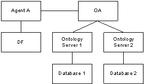
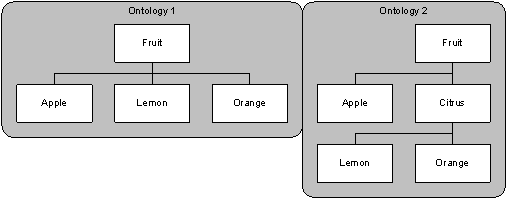
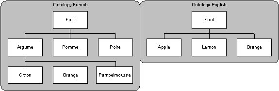
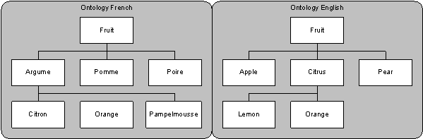
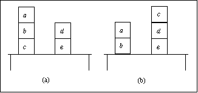
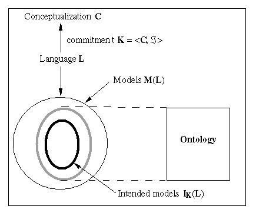
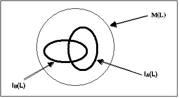
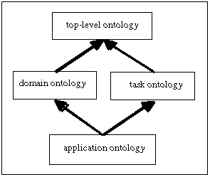

1 Scope
The model of agent communication in FIPA is based on the assumption that two agents, who wish to converse, share a common ontology for the domain of discourse. It ensures that the agents ascribe the same meaning to the symbols used in the message. For a given domain, designers may decide to use ontologies that are explicit, declaratively represented (and stored somewhere) or, alternatively, ontologies that are implicitly encoded with the actual software implementation of the agent themselves and thus are not formally published to an ontology service.
This FIPA specification deals with technologies enabling agents to manage explicit, declaratively represented ontologies. An ontology service for a community of agents is specified for this purpose. It is required that the service be provided by a dedicated agent, called an Ontology Agent (OA), whose role in the community is to provide some or all of the following services:
· discovery of public ontologies in order to access them,
· maintain (for example, register with the DF, upload, download, and modify) a set of public ontologies,
· translate expressions between different ontologies and/or different content languages,
· respond to query for relationships between terms or between ontologies, and,
· facilitate the identification of a shared ontology for communication between two agents.
This specification deals only with the communicative interface to such a service while internal implementation and capabilities are left to developers. It is not mandated that every OA be able to execute all those tasks (for example, translation between ontologies, and identification of a shared ontology are in general very difficult and not always possible to realize), but every OA must be able to participate into a communication about these tasks (possibly responding that it is not able to execute the translation task). The interface is specified at the agent communication level (see [FIPAacl] and [FIPA00023]) as opposed to a computational API. Therefore, the specification defines the interaction protocols, the communicative acts and, in general, the vocabulary that agents must adopt when using this service.
This specification enables developers to build:
· agents that access such a service,
· agents that provide it, and,
· agents able to negotiate at run-time a shared ontology for communication.
The application of this specification does not prevent the existence of agents that, for a given domain, use ontologies implicitly encoded with the implementation of the agents themselves. In these cases full agent communication and understanding can still be obtained, however the services provided by the OA cannot apply to implicit encoded ontologies.
It is not intention of this document to mandate that every AP must include an Ontology Agent. However, in order to promote interoperability, if one OA exists, then it must comply with this specification. And, if the services here described are required by a specific agent platform implementation, then they must be implemented in compliance with this specification.
In order to keep the applicability of the specification as unrestricted as possible, the approach used is platform independent. In particular, this specification does not mandate the storage format of ontologies but only the way agents access an ontology service. However, in order to specify the service, an explicit representation formalism has been specified. It is the FIPA-Meta-Ontology (see section 5) that allows communication of knowledge between agents. As far as possible, care has been taken to integrate existing formalisms, such as [OKBC] and [W3CRDF].
2 Ontology Service
An OA is an agent that provides access to one or more ontology servers and which provide ontology services to an agent community. As well as all the other agents, the OA registers its service with the DF and it also registers the list of maintained ontologies and their translation capabilities in order to allow agents to query the DF for the specific OA that manages a specific ontology.
Every agent can then request the services of the OA by using the communicative interface specified in section 6. In particular, they can request to define, modify or remove terms and definitions of the ontology; they can request to translate expressions between two ontologies for which there exists a mapping; they can query for definitions, or relationships between terms or between ontologies; finally, they can request to find a shared ontology for communication with another agent. Even if any agent requests one of the above services, the OA reserves the right to refuse the request.
The realization of this communication obviously needs an agreement on the language to communicate facts about ontologies. This is described in section 3.2, Ontology Naming where the subsumed knowledge model and the FIPA meta-ontology is specified. It describes the primitives, and normatively defines their names, used in the communication, like concepts, parameters, relations, etc. It must be noticed that this specification is neutral in respect to the language used to store and represent the ontology (for example, RDF, KIF, ODL, …), while it only specifies the language to communicate about ontologies.
Section 5.3, Interaction Protocol to Agree on a Shared Ontology specifies the interaction protocol that two agents can use to agree on a shared ontology for communication.
The document concludes with two informative annexes. Section 7, gives a clear definition of what is intended with the term ontology and, in particular, what is the difference between a conceptualization, an ontology, and a knowledge base. Section 8, lists an informative set of guidelines to help developers to define well-founded new ontologies.
2.1 Rationale for Explicit Ontologies
The FIPA communication model defined in [FIPA00023] is based on the assumption that communicating agents share an ontology of communication defining speech acts and protocols (see Figure 1). In order to have fruitful communication, agents must also share an ontology of their domain of application. In an open environment, agents are designed around various ontologies (either implicit or explicit). For allowing their communication, explicit ontologies are however necessary, together with a standard mechanism to access and refer to them (such as an access protocol or a naming space).
Figure 1: Ontology-Based Communication Model
Without explicit ontologies, agents need to share intrinsically the same ontology to be able to communicate and this is a strong constraint in an open environment where agents, designed by different programmers or organizations, may enter into communication.
An explicit ontology is considered to be declaratively represented as opposed to implicitly, procedurally encoded. It can be then considered as “a referring knowledge” and, as a consequence, could be outside the communicating agents; managed by a dedicated ontology agent.
As described in section 7, an ontology is not only a vocabulary but also contains explicit axioms to approximate meaning, that is, to constrain the set of intended models. Explicit axioms allow validation of specifications, unambiguous definition of vocabulary, automation of operations like classification and translation.
Several benefits can be envisioned by having explicitly represented ontologies, such as enabling querying for concepts, updating an ontology, reusing ontologies by extending or specializing existing ones, translation between different ontologies, sharing through referring to ontology names and locations, etc.
2.2 Benefits for Applications
There are many applications that benefit from having a dedicated agent that manages and controls access to a set of explicit ontologies.
In information retrieval applications, the size of some linguistic ontologies may prevent an agent from storing the ontology in its address space, so that agents need to remotely access and refer to ontologies for disambiguation of user queries, for using information about taxonomies of terms or thesauri to enhance the quality of retrieved results, etc. The definition of a standard interface to access and query an ontology service can increase and simplify the interoperability between different systems.
Semantic integration of heterogeneous information sources in an open and dynamic
environment, such as the Internet or a digital library, may also benefit from
an ontology service. There are already implementations [Bayardo96] that use one domain ontology to integrate several
information sources, managed by a dedicated agent, whilst still allowing each
source to use its private ontology. Every user can also have their own ontology
depending on their preference, their role in the domain or simply their known
language. Every used ontology is a subset of the domain ontology or there exists
a map between it and the domain ontology; the knowledge about these
relationships (subset and mapping) is usually maintained by some
ontology-dedicated agents.
Some applications use machine-learning techniques to adaptively extend an ontology based on the interaction of the user with the system. In this case, at the execution time, several user agents may compete or collaborate to request a dedicated agent to modify an ontology.
2.3 Sample Scenarios
2.3.1 Scenario 1 – Definition of Terms Querying
This scenario shows the usage of an Ontology Agent to access definition of terms when using large linguistic ontologies:
Let’s consider Agent B able to index pictures based on their captions and send them on a demand basis:
1. Agent A, which for instance is a user interface agent, is willing to get pictures of diseased citrus for its user, who is a farmer and wants to discover a diagnosis for his citrus trees. Agent A, then, requests Agent B, to send pictures of diseased citrus by referring to a given domain ontology, for example, the farmer ontology.
2. Agent B discovers that no pictures under the name citrus are available. Before sending the answer to Agent A, Agent B queries the appropriate OA (where the farmer ontology resides) to obtain sub-species of citrus (which may be also sub-species of the diseased property) within the given ontology.
3. The OA answers Agent B, informing it that oranges and lemon are sub-species of citrus.
4. Then, Agent B finds pictures of diseased lemon and diseased orange and sends them to the Agent A.
5. The scenario might continue with the user, that is, the farmer, looking at the several pictures and finding a match with the problem his trees have. When he has found the problem, he may then ask Agent A to find a diagnosis and a cure for it. Even in this case, the service provided by the OA might be useful again.
6. The existence of an explicit declarative ontology managed by an external agent, the OA, allows Agent B to concentrate on its actual task of indexing and sending pictures rather than on the maintenance of the ontology itself. Agent B may also be more lightweight as it is not necessary for it to encode all the ontology since relations and definition of concepts can be accessed on demand by querying the OA.
Even Agent A may need to access the same OA, for instance to explain to its user the type of diseased as in the figure.
2.3.2 Scenario 2 – Shared Ontology Selection
Agent SP is the service provider for electronic commerce of a given merchant. It has simple behaviours referring to the sell-products ontology. It has other more complex behaviours referring to the sell-wholesale-products ontology. The complex behaviours are designed as extensions of the simple ones. The sell-wholesale-products ontology is defined explicitly in an ontology server (for example, Ontolingua) as an extension of the sell-products ontology.
The ontology server is accessible by agents of a given FIPA compliant platform through an OA named OA1. Following the FIPA ontologies naming scheme, these two ontologies are named as follows: sell-products and sell-wholesale-product. Both of these ontologies refer to the electronic commerce domain.
Agent SP would like to sell products. It makes a call for proposal using a call-for-proposals (CFP) communicative act (see [FIPA00042]); the content of this communicative act refers to the sell-wholesale-products ontology.
Agent C is a customer. It has only simple behaviours referring to the sell-products ontology. Agent C does not know the sell-wholesale-products ontology and as a consequence has no precise idea of the purpose of this CFP. However Agent C believes that the CFP of Agent SP is interesting to it, for instance because:
· it believes that all CFPs from Agent SP are interesting to it, or,
· a third party agent knowing the needs of Agent C and understanding this CFP has recommended Agent C to answer this CFP, or,
· it has behaviour referring to the electronic commerce domain (that is at least the case in this example).
Following the CFP of Agent SP, three different protocols of interaction could be considered:
1. Agent C queries Agent SP to know if other ontologies can be used in this CFP. Agent SP answers that the sell-products ontology can be used. If Agent C does not know this ontology (this general case does not apply in this example), the process of interaction is repeated.
2. Agent C queries the DF to determine if it knows OAs providing access to electronic commerce domain. The DF answers to Agent C with a list of OAs including OA1. Agent C queries all these OAs about ontologies related to the sell-wholesale-products. OA1 informs Agent C that the sell-wholesale-products ontology is an extension of sell-wholesale-products ontology. Agent C asks Agent SP if it can use the sell-products ontology.
3. Agent C queries the DF to determine if it knows the address of OA1 which the DF gives back. Agent C queries OA1 about ontologies and OA1 informs Agent C that the sell-wholesale-products ontology is an extension of sell-products ontology. Agent C asks Agent SP if it can use the sell-products ontology.
2.3.3 Scenario 3 – Equivalence Testing
In this scenario an agent has to check the logical equivalence of two ontologies:
1. An ontology designer in US declares the car-product ontology and associated this to the ontology agent OA2, which is referred within the OA2 under the name car-product, following the FIPA ontologies naming scheme.
2. The ontology designer declares a complete French translation of its car-product ontology to the ontology agent OA1 in France as thevoiture ontology. Moreover these two ontologies are declared equivalent to OA1. The exact mapping is provided to OA1.
3. Agent A (in the US) requests OA2 to provide an ontology of domain cars which returns the ontology name car-product.
4. Agent A wants to communicate with Agent B (in France) about cars with the ontology car-product. Note that agent Agent A does not know this ontology.
5. Agent A queries if OA1 is able to provide an ontology equivalent to car-product. If it is, OA1 returns voiture to Agent A;
6. Agent A informs Agent B that these two ontologies voiture and car-product are equivalent and that OA1 can be used as a translator.
7. The dialogue between Agent A and Agent B can then start.
2.3.4 Scenario 4 – Ontology Location
In this scenario, an Agent A wants to know the list of ontologies referring to the term car. The agent believes that such an ontology exists because it has received a natural language request from a user including this term. However, it has no idea of the kind of concepts underlying this symbol, and it would like to access its definition without any human intervention.
1. Agent A wants to know the list of ontologies referring to a given term.
2. Agent A queries the DF for the list of OAs available.
3. Agent A queries each OA for the list of ontologies that include the given term.
4. The OA queries all the ontologies that it is able to access, about an object, a property and a class labelled with the given term.
2.3.5 Scenario 5 – Term Translation
This scenario gives a pragmatic example illustrating the "use of translation of terms" in a multi-agent context and it involves the naming of terms.
Consider a project integrating two legacy databases. Users of the integrated system want to continue seeing the integrated databases in the terms they are used to, the terms of the legacy database they were using. The first database contains information about the aircraft parts owned by the aircraft manufacturer; the second database describes aircraft parts owned by the aircraft operator.
In each database, an aircraft part has a name. However, one database calls it a name and the other calls it nomenclature. In other words, name and nomenclature are based on the same concept definition (the name of a part).
A query server answers queries from user agents (user interfaces and agents acting for users). The query server uses a domain ontology that integrates the data source ontologies. The user interface is based on a user model with user ontologies. This permits one user to specify and see part nomenclature in his user interface while another will see part name. We translate terms to answer queries based on each user ontology, and we also translate queries for each database (see Figure 2).

Figure 2: Model of Scenario 5
1. An agent, Agent A, wants to translate a given term from a first ontology into the corresponding term from a second one.
2. Agent A queries the DF for an OA which supports the translation between these ontologies.
3. The DF returns the name of a given OA; this OA knows the format of the ontologies involved (XML, OKBC, etc.) and has capabilities to make translation between these ones.
4. Agent A queries this OA.
5. The OA translates the requested term from Ontology Server 1 to Ontology Server 2 where Ontologies 1 and 2 contain the terms defined respectively in Databases 1 and 2.
3 Ontology Service Reference Model
Ontologies are stored at an ontology server. In general, several servers may exist with different interfaces and different capabilities. The OA allows agents to discover ontologies and servers and to access their services in a unique way, that is more suitable to the agent communication mechanism. Furthermore, it can implement extra functionalities such as a translation service or it can bring to the agent community knowledge about relationships between the different ontologies. This reference model given in Figure 3 does not preclude that in some particular implementations, the OA might wrap directly one ontology server.
Figure 3: Ontology Service Reference Model
The scope of this FIPA specification is ACL level communication between agents and not communication between the OAs and the ontology servers (for example, OKBC, OQL or any other proprietary protocol). Therefore, a FIPA-compliant OA will have to be developed on a custom basis to support interfaces with non-FIPA compliant ontology severs.
3.1.1 Ontology Agent Services
The OA must be able to participate in a communication about the following tasks, possibly responding that it is not able to execute these tasks:
· helping a FIPA agent in selecting a shared (sub)ontology for communication,
· creating and updating an ontology, or only some terms of an ontology,
· translating expressions between different ontologies (different names with same meanings),
· responding to queries for relationships between terms or between ontologies, and,
· discovering public ontologies in order to access them.
Furthermore, the OA allows the Ontology Server to make its ontologies publicly available in the agent domain.
3.2 Ontology Naming
Each ontology is stored at an ontology server. The OA registers the list of supported ontologies with the DF and within an OA, each ontology is uniquely named, registered and identified by a logical name managed by the OA. It hides from the agent community the physical name of the ontology, both the name of the server (for example, Ontolingua) and the actual name of the ontology itself. The OA is only responsible for knowing about the mapping to the physical name, while all ACL messages and references are assumed to refer directly to this ontology identifier[1].
3.3 Relationships Between Ontologies
In an open environment, agents may benefit, in some applications, from knowing the existence of some relationships between ontologies, for instance to decide if and how to communicate with other agents. Even if in principle every agent may believe such relationships, the ontology agent has the most adequate role in the community to know that. It can be then queried for the value of such relationships and it can use that for translation or for facilitating the selection of a shared ontology for agent communication. The following predicate must be used for this purpose:
(ontol-relationship ?O1 ?O2 ?level)
which is defined to be true when a relationship of level level exists between the two ontologies in the arguments O1 and O2. The argument level may assume one of the values specified in Table 1[2].
|
Extension |
When O1 extends the ontology O2 |
|
Identical |
When the two ontologies O1 and O2 are identical |
|
Equivalent |
When the two ontologies O1 and O2 are equivalent |
|
Weakly-Translatable |
When the source ontology O1 is weakly translatable to the target ontology O2 |
|
Strongly-Translatable |
When the source ontology O1 is strongly translatable to the target ontology O2 |
|
Approx-Translatable |
When the source ontology O1 is approximately translatable to the target ontology O2 |
Table 1: Ontology Relationship Levels
3.3.1 Extending Ontologies
It is common and good engineering practice to build a new ontology by extending or combining existing ones. The extension level of relationship captures this reuse practice.
When (ontol-relationship O1 O2 extension) holds, then the ontology O1 extends or includes the ontology O2. Informally this means that all the symbols that are defined within the O2 ontology are found in the O1 ontology, with the very important restriction that the properties expressed between the entities in the O2 ontology are conserved in the O1 ontology.
This specification makes no distinction between extension and inclusion relationships between ontologies.

Figure 4: Example Extension of an Ontology
Example 1 (extension): In the Ontology O1 (see Figure 4) the class Fruit is split into the Apple, Lemon and Orange classes. The ontology O2 extends O1 by inserting the class Citrus between the class Fruit and both classes Orange and Lemon. In this case the predicate holds since all entities in O1 are in O2 and since all relations in O1 still hold. For instance, in O1 Lemon is a Fruit, and in O2 Lemon is a Citrus and Citrus is a Fruit implies that Lemon is a Fruit.
Example 2 (inclusion): O1 defines Cars, O2 defines Cars and Vans by reusing without any modification all classes involved in the Cars class defined in O1. Once more (ontol-relationship O2 O1 extension) holds.
3.3.2 Identical Ontologies
This level is used to assert that two ontologies O1 and O2 are identical. By identical, we mean that the vocabulary, the axiomatization and the representation language used are physically identical, like are for instance two mirror copies of a file. However two identical ontologies could be named and referred under different names[3].
3.3.3 Equivalently Ontologies
Two ontologies O1 and O2 are said to be equivalent whenever they share the same vocabulary and the same logical axiomatization, but possibly are expressed using different representation languages (for instance, Ontolingua and XML).
If we consider a particular ontology server with given deduction capabilities, everything that is provable or deductible from O1 will be provable from O2 and vice versa. Moreover, the following property holds: if O1 and O2 are equivalent then O1 and O2 are strongly translatable in both ways. In this case only a mapping between the representation languages is required[4].
3.3.4 Weakly Translatable Ontologies
This level relates two ontologies Osource and Odest when it is possible to translate from Osource to Odest, even if with a possible loss of information. Odest is then supposed to share a subset of the vocabulary and axiomatization of Osource. It means that some terms or relationships from Osource will be possibly simplified when translated to Odest. It means also that some terms or relationships will not be translatable to Odest, because they do not appear in the Odest axiomatizations. Nevertheless, a weak translation should not introduce any inconsistency.
For example, let us consider the French (Osource) and English (Odest) simple ontologies on fruit such as (see Figure 5):
· In Osource a Fruit is an Agrume or Pomme or Poire and an Agrume is either a Citron, an Orange or a Pamplemousse.
· In Odest a Fruit is either a Lemon, an Orange or an Apple.
Osource is weakly translatable to Odest with the vocabulary mapping (PommeÞ Apple; CitronÞ Lemon; OrangeÞ Orange; FruitÞ Fruit) with a loss of information concerning Pamplemousse, Poire and the conceptualization of Agrume as the subclass of Fruit containing Citron, Pamplemousse and Orange. Nevertheless after translation Lemons and Oranges are still Fruits.

Figure 5: Example Weakly Translatable Ontologies
3.3.5 Strongly Translatable Ontologies
An ontology Osource is said to be related with level Strongly-Translatable to ontology Odest if:
1. the vocabulary of Osource can be totally translated to the vocabulary of Odest,
2. the axiomatization of Osource holds in Odest,
3. there is no loss of information from Osource to Odest, and,
4. there is no introduction of inconsistency.
However, the representation languages used by Osource and Odest can still be different.
For example, let us consider the English (Osource) and French (Odest) ontologies, such as (see Figure 6):
· In Osource a Fruit is a either a Citrus, an Apple or a Pear, and a Citrus is either a Lemon or an Orange.
· In Odest a Fruit is an Agrume or a Pomme or a Poire, and an Agrume is either a Citron an Orange or a Pamplemousse.
Osource is Strongly Translatable to Odest with the vocabulary mapping (AppleÞ Pomme; LemonÞ Citron; OrangeÞ Orange; FruitÞ Fruit, PearÞ Poire, Citrus Þ Agrume). Moreover every property that holds in Osource holds in Odest after translation. Thus this is an example of a strongly translatable predicate. The reverse translation, that is, Odest to Osource is not strongly translatable since Pamplemousse is not defined in Osource.

Figure 6: Example of Strongly Translatable Ontologies
3.3.6 Approximately Translatable Ontologies
This level is the less restrictive. Two ontologies Osource and Odest are said to be related with level Approx-Translatable if they are Weakly-Translatable with introduction of possible inconsistencies, for example, some of the relations become no more valid and some constraints do not apply anymore.
For example, let us consider two ontologies that refer to a term which has slightly different meanings according to the context in which it is used. The two ontologies are respectively ingredients-for-chinese-cooking and ingredients-for-european-cooking. In both ontologies, we consider the two following classes Parsley and Pepper. The difference is that in the ingredients-for-chinese-cooking ontology, Coriander is classified as a sort of Parsley, because its leaves are used and that in the ingredients-for-european-cooking ontology, Coriander is classified as a sort of Pepper, because only its seeds (called “Chinese” pepper) are used. The term Coriander enjoys different properties in the two ontologies, even if it refers to the same plant.
If we consider a translation between these two ontologies, the translation of Coriander (in the ingredients-for-chinese-cooking ontology) by Coriander (in the ingredients-for-european-cooking ontology) can be useful mainly because as said previously the term designates the same plant. Nevertheless, some of the properties expressed in the ingredients-for-chinese-cooking ontology do not hold any more in the ingredients-for-european-cooking ontology and vice versa.
3.3.7 General Properties
The following properties hold between level of relationships:
· Strongly-TranslatableÞWeakly-TranslatableÞApprox-Translatable
· Equivalent (O1, O2)ÞStrongly-Translatable (O1, O2)ÙStrongly-Translatable (O2, O1)
· IdenticalÞEquivalent
3.4 Registration of the Ontology Agent with the DF
In order for an agent to advertise its willingness to provide a set of ontology services to an agent domain, it must register with a DF (as described in [FIPA00023]). Of course, the DF is not responsible for ensuring the validity of the provided service.
As part of this registration process a number of constant values are introduced which universally identify the ontology services. The service-description object registered with the DF must include the following parameters:
· :type must be declared as a fipa-oa service,
· :ontology must include the constant FIPA-Ontol-Service-Ontology, which identifies the set of actions that can be requested to be performed by an OA, and,
· :properties must include the set of supported ontologies:
property (
:name supported-ontologies
:value (set ontology-description))
In addition to the set of supported ontologies, the OA may also register its translation capabilities between different ontologies (if it has any). Notice that the specification does not prevent non-OA agents to also have translation capabilities. The translation capabilities may include ontology translation, language translation or both. The following constant values must be used to register translation services:
· :type parameter must be declared as a translation-service,
· :ontology must include the constant FIPA-Meta-Ontology, which identifies the set of actions that can be requested to be performed by an OA, regarding translation services, and,
· :properties must include the set of available ontology translations:
property (
:name ontology-translation-types
:value (set translation-description))
and/or the list of available language translation types:
property (
:name language-translation-types
:value (set translation-description))
The definitions for the objects ontology-description and translation-description are given in section 4, Ontology Service Ontology.
The following is an example of registration of an OA with the DF:
(request
:sender
(agent-identifier
:name oa@foo.com
:addresses (sequence iiop://foo.com/acc))
:receiver (set
(agent-identifier
:name df@bar.com
:addresses (sequence iiop://bar.com/acc)))
:language FIPA-SL0
:protocol FIPA-Request
:ontology FIPA-Agent-Management
:content
(action
(agent-identifier
:name df@bar.com
:addresses (sequence iiop://bar.com/acc))
(register
(df-description
:name
(agent-identifier
:name oa@foo.com
:addresses (sequence iiop://foo.com/acc))
:services (set
(service-description
:name Serv_Name1
:type fipa-oa
:ontology (set FIPA-Ontol-Service-Ontology)
:properties (set
(property
:name supported-ontologies
:value (set
(ontology-description
:ontology-name FIPA-VPN-Provisioning
:version "1.0"
:source-languages (set XML)
:domains (set Telecomms))
(ontology-description
:ontology-name Product
:source-languages (set KIF)
:domains (set Commerce))))))
(service-description
:name Serv_Name2
:type translation-service
:ontology (set FIPA-Ontol-Service-Ontology)
:properties (set
(property
:name ontology-translation-types
:value (set
(translation-description
:from FIPA-VPN-Provisioning
:to Product
:level Weakly-Translatable)
(translation-description
:from Product
:to Italian-Product
:level Strongly-Translatable)))
(property
:name language-translation-types
:value (set
(translation-description
:from FIPA-SL
:to KIF
:level Weakly-Translatable)
(translation-description
:from OntoLingua
:to LOOM
:level Strongly-Translatable)))))
:protocol FIPA-Request
:ontology FIPA-Ontol-Service-Ontology))))
3.4.1 Querying the DF
The search action (see [FIPA00023] enables an agent to query the DF for available ontology related services, namely:
· the list of registered OAs,
· the list of OAs that support ontologies in a given domain,
· the basic properties of a given ontology (for example, domain, source-language), and,
· the list of OAs that provide a specific translation service.
It is also possible for an agent to query a DF to establish what agents claim to understand a given ontology. The reply could be a list of OA who offer such an ontology, the requesting agent can then use it intelligence to decide which ontology service is wishes to use.
For example, the following example describes the case where an agent (the pca-agent in the example) queries a DF to establish what OA agents can support the FIPA-VPN-Provisioning ontology:
(request
:sender
(agent-identifier
:name pca-agent@foo.com
:addresses (sequence iiop://foo.com/acc))
:receiver (set
(agent-identifier
:name df@bar.com
:addresses (sequence iiop://bar.com/acc)))
:language FIPA-SL0
:protocol FIPA-Request
:ontology FIPA-Agent-Management
:reply-with search-123
:content
(action
(agent-identifier
:name df@bar.com
:addresses (sequence iiop://bar.com/acc))
(search
(df-agent-description
:services (set
(service-description
:type fipa-oa
:ontology (set FIPA-Ontol-Service-Ontology)
:properties (set
(property
:name supported-ontologies
:value (set
(ontology-description
:ontology-name FIPA-VPN-Provisioning)))))))))
The DF responds listing the details of the appropriate OAs registered:
(inform
:sender
(agent-identifier
:name df@bar.com
:addresses (sequence iiop://bar.com/acc))
:receiver (set
(agent-identifier
:name pca-agent@foo.com
:addresses (sequence iiop://foo.com/acc)))
:language FIPA-SL0
:protocol FIPA-Request
:ontology FIPA-Agent-Management
:in-reply-to search-123
:content
(result
(action
(agent-identifier
:name df@bar.com
:addresses (sequence iiop://bar.com/acc))
(search
(df-agent-description
:name
(agent-identifier
:name oa@foo.com
:addresses (sequence iiop://foo.com/acc))
:type fipa-oa
:services (set
(service-description
:name Serv_Name1
:type fipa-oa
:ontology (set FIPA-Ontol-Service-Ontology)
:properties (set
(property
:name supported-ontologies
:value (set
(ontology-description
:ontology-name FIPA-VPN-Provisioning
:source-languages (set XML)
:domains (set Telecoms))
(ontology-description
:ontology-name product
:source-languages (set KIF)
:domains (set Commerce))))))
(service-description
:type translation-service
:ontology (set FIPA-Ontol-Service-Ontology)
:name Serv_Name2
:properties (set
(property
:name ontology-translation-types
:value (set
(translation-description
:from FIPA-VPN-Provisioning
:to Product
:level Weakly-Translatable)
(translation-description
:from Product
:to Italian-Product
:level Strongly-Translatable)))
(property
:name language-translation-types
:value (set
(translation description
:from FIPA-SL
:to KIF
:level Weakly-Translatable)
(translation-description
:from Ontolingua
:to LOOM
:level Strongly-Translatable))))))
:protocol FIPA-Request)
:ontology FIPA-Ontol-Service-Ontology)))))
4 Ontology Service Ontology
4.1 Object Descriptions
This section describes a set of frames, that represent the classes of objects in the domain of discourse within the framework of the FIPA-Ontol-Service-Ontology ontology.
The following terms are used to describe the objects of the domain:
· Frame. This is the mandatory name of this entity, that must be used to represent each instance of this class.
· Ontology. This is the name of the ontology, whose domain of discourse includes the parameters described in the table.
· Parameter. This is the mandatory name of a parameter of this frame.
· Description. This is a natural language description of the semantics of each parameter.
· Presence. This indicates whether each parameter is mandatory or optional.
· Type. This is the type of the values of the parameter: Integer, Word, String, URL, Term, Set or Sequence.
· Reserved Values. This is a list of FIPA-defined constants that can assume values for this parameter.
4.1.1 Ontology Description
|
Frame Ontology |
ontology-description FIPA-Ontol-Service-Ontology |
|
||
|
Parameter |
Description |
Presence |
Type |
Reserved Values |
|
ontology-name |
The symbolic name of the ontology. |
Mandatory |
Word |
|
|
version |
The version of the ontology. |
|
String |
|
|
source-languages |
A list of languages in which the ontology is represented, |
Mandatory |
Set of String |
|
|
domains |
A list of application domains in which the ontology is applicable. |
Mandatory |
Set of String |
|
4.1.2 Translation Description
|
Frame Ontology |
translation-description FIPA-Ontol-Service-Ontology |
|
||
|
Parameter |
Description |
Presence |
Type |
Reserved Values |
|
from |
The representation of the source ontology or language. |
Mandatory |
Word |
|
|
to |
The representation of the destination ontology or language. |
Mandatory |
Word |
|
|
level |
The translation relationship between the source and destination ontologies or languages. |
Mandatory |
String |
Equivalent Weakly-Translatable Strongly-Translatable Approx-Translatable |
5 Meta Ontology
One of the goals of this specification is to allow agents to talk about and manipulate knowledge, for instance to query for the definition of a concept or to define a new concept. A standard meta-ontology and knowledge model is necessary for this purpose, which describes the primitives used by a knowledge representation language, like concepts, parameters, relations, etc.
FIPA adopts for its specification the knowledge model of [OKBC], which is hereafter defined and referred with the reserved constant FIPA-Meta-Ontology. The adopted knowledge model supports an object-oriented representation of knowledge and provides a set of representational constructs commonly found in object-oriented knowledge representation systems.
It must be noticed that the adoption of this meta-ontology does not prevent the usage of whatever knowledge representation language a designer wants to use. Instead, for a FIPA-compliant agent, this is mandated and serves the purpose of the interlingua for knowledge that is being communicated, that is knowledge obtained from or provided to an OA must be expressed in this knowledge model. It is left to agents, then, the responsibility to translate knowledge from the actual knowledge representation language into and out of this interlingua, as needed.
For an accurate understanding of this knowledge model, the reader should directly refer to [OKBC]. However, for quick reference and to simplify the reading of this document, the following section is an integral reproduction of Chapter 2 of [OKBC].
5.1 The OKBC Knowledge Model
<!DOCTYPE HTML PUBLIC "-//W3C//DTD HTML 3.2 Final//EN">
<!--Converted with LaTeX2HTML 98.1p1 release (March 2nd, 1998)
originally by Nikos Drakos (nikos@cbl.leeds.ac.uk), CBLU, University of Leeds
* revised and updated by: Marcus Hennecke, Ross Moore, Herb Swan
* with significant contributions from:
Jens Lippmann, Marek Rouchal, Martin Wilck and others
-->
The Open Knowledge Base Connectivity provides operations for manipulating knowledge expressed in an implicit representation formalism called the OKBC Knowledge Model, which we specify in this chapter. The OKBC Knowledge Model supports an object-oriented representation of knowledge and provides a set of representational constructs commonly found in object-oriented knowledge representation systems (KRSs) [4]. Knowledge obtained from an KRS using OKBC or provided to an KRS using OKBC is assumed in the specification of the OKBC operations to be expressed in the Knowledge Model. The OKBC Knowledge Model therefore serves as an implicit interlingua for knowledge that is being communicated using OKBC, and systems that use OKBC translate knowledge into and out of that interlingua as needed.
The OKBC Knowledge Model includes constants, frames, slots, facets, classes, individuals, and knowledge bases. We describe each of these constructs in the sections below. To provide a precise and succinct description of the OKBC Knowledge Model, we use the Knowledge Interchange Format (KIF) [2] as a formal specification language. KIF is a first-order predicate logic language with set theory, and has a linear prefix syntax.
Constants
The OKBC Knowledge Model assumes a universe of discourse consisting of all entities about which knowledge is to be expressed. Each OKBC knowledge base may have a different universe of discourse. However, OKBC assumes that the universe of discourse always includes all constants of the following basic types:
· integers,
· floating point numbers,
· strings,
· symbols,
· lists, and,
· classes.
Classes are sets of entities[5], and all sets of entities are considered to be classes. OKBC also assumes that the domain of discourse includes the logical constants true and false.
Frames, Own Slots, and Own Facets
A frame is a primitive object that represents an entity in the domain of discourse. Formally, a frame corresponds to a KIF constant. A frame that represents a class is called a class frame, and a frame that represents an individual is called an individual frame.
A frame has associated with it a set of own slots, and each own slot of a frame has associated with it a set of entities called slot values. Formally, a slot is a binary relation, and each value V of an own slot S of a frame F represents the assertion that the relation S holds for the entity represented by F and the entity represented by V (i.e., (S F V)[6]). For example, the assertion that Fred's favorite foods are potato chips and ice cream could be represented by the own slot Favorite-Food of the frame Fred having as values the frame Potato-Chips and the string "ice cream".
An own slot of a frame has associated with it a set of own facets, and each own facet of a slot of a frame has associated with it a set of entities called facet values. Formally, a facet is a ternary relation, and each value V of own facet Fa of slot S of frame Fr represents the assertion that the relation Fa holds for the relation S, the entity represented by Fr, and the entity represented by V (i.e., (Fa S Fr V)). For example, the assertion that the favorite foods of Fred must be edible foods could be represented by the facet :VALUE-TYPE of the Favorite-Food slot of the Fred frame having the value Edible-Food.
Relations may optionally be entities in the domain of discourse and therefore representable by frames. Thus, a slot or a facet may be represented by a frame. Such a frame describes the properties of the relation represented by the slot or facet. A frame representing a slot is called a slot frame, and a frame representing a facet is called a facet frame.
Classes and Individuals
A class is a set of entities. Each of the entities in a class is said to be an instance of the class. An entity can be an instance of multiple classes, which are called its types. A class can be an instance of a class. A class which has instances that are themselves classes is called a meta-class.
Entities that are not classes are referred to as individuals. Thus, the domain of discourse consists of individuals and classes. The unary relation class is true if and only if its argument is a class and the unary relation individual is true if and only if its argument is an individual. The following axiom holds:[7]
(<=> (class ?X) (not (individual ?X)))
The class membership relation (called instance-of) that holds between an instance and a class is a binary relation that maps entities to classes. A class is considered to be a unary relation that is true for each instance of the class. That is:[8]
(<=> (holds ?C ?I) (instance-of ?I ?C))
The relation type-of is defined as the inverse of relation instance-of. That is:
(<=> (type-of ?C ?I) (instance-of ?I ?C))
The subclass-of relation for classes is defined in terms of the relation instance-of, as follows. A class Csub is a subclass of class Csuper if and only if all instances of Csub are also instances of Csuper. That is[9]:
(<=> (subclass-of ?Csub ?Csuper)
(forall ?I (=> (instance-of ?I ?Csub)
(instance-of ?I ?Csuper))))
Note that this definition implies that subclass-of is transitive. (I.e., If A is a subclass of B and B is a subclass of C, then A is a subclass of C.)
The relation superclass-of is defined as the inverse of the relation subclass-of. That is:
(<=> (superclass-of ?Csuper ?Csub) (subclass-of ?Csub ?Csuper))
Class Frames, Template Slots and Template Facets
A class frame has associated with it a collection of template slots that describe own slot values considered to hold for each instance of the class represented by the frame. The values of template slots are said to inherit to the subclasses and to the instances of a class. Formally, each value V of a template slot S of a class frame C represents the assertion that the relation template-slot-value holds for the relation S, the class represented by C, and the entity represented by V (i.e., (template-slot-value S C V)). That assertion, in turn, implies that the relation S holds between each instance I of class C and value V (i.e., (S I V)). It also implies that the relation template-slot-value holds for the relation S, each subclass Csub of class C, and the entity represented by V (i.e., (template-slot-value S Csub V)). That is, the following slot value inheritance axiom holds for the relation template-slot-value:
(=> (template-slot-value ?S ?C ?V)
(and (=> (instance-of ?I ?C) (holds ?S ?I ?V))
(=> (subclass-of ?Csub ?C)
(template-slot-value ?S ?Csub ?V))))
Thus, the values of a template slot are inherited to subclasses as values of the same template slot and to instances as values of the corresponding own slot. For example, the assertion that the gender of all female persons is female could be represented by template slot Gender of class frame Female-Person having the value Female. Then, if we created an instance of Female-Person called Mary, Female would be a value of the own slot Gender of Mary.
A template slot of a class frame has associated with it a collection of template facets that describe own facet values considered to hold for the corresponding own slot of each instance of the class represented by the class frame. As with the values of template slots, the values of template facets are said to inherit to the subclasses and instances of a class.
Formally, each value V of a template facet F of a template slot S of a class frame C represents the assertion that the relation template-facet-value holds for the relations F and S, the class represented by C, and the entity represented by V (i.e., (template-facet-value F S C V)). That assertion, in turn, implies that the relation F holds for relation S, each instance I of class C, and value V (i.e., (F S I V)). It also implies that the relation template-facet-value holds for the relations S and F, each subclass Csub of class C, and the entity represented by V (i.e., (template-facet-value F S Csub V)).
In general, the following facet value inheritance axiom holds for the relation template-facet-value:
(=> (template-facet-value ?F ?S ?C ?V)
(and (=> (instance-of ?I ?C) (holds ?F ?S ?I ?V))
(=> (subclass-of ?Csub ?C)
(template-facet-value ?F ?S ?Csub ?V))))
Thus, the values of a template facet are inherited to subclasses as values of the same template facet and to instances as values of the corresponding own facet.
Note that template slot values and template facet values necessarily inherit from a class to its subclasses and instances. Default values and default inheritance are specified separately.
Primitive and Non-Primitive Classes
Classes are considered to be either primitive or non-primitive by OKBC. The template slot values and template facet values associated with a non-primitive class are considered to specify a set of necessary and sufficient conditions for being an instance of the class. For example, the class Triangle could be a non-primitive class whose template slots and facets specify three-sided polygons. All triangles are necessarily three-sided polygons, and knowing that an entity is a three-sided polygon is sufficient to conclude that the entity is a triangle.
The template slot values and template facet values associated with a primitive class are considered to specify only a set of necessary conditions for an instance of the class. For example, all classes of "natural kinds" - such as Horse and Building - are primitive concepts. A KB may specify many properties of horses and buildings, but will typically not contain sufficient conditions for concluding that an entity is a horse or building.
Formally:
(=> (and (class ?C) (not (primitive ?C)))
(=> (and (=> (template-slot-value ?S ?C ?V) (holds ?S ?I ?V))
(=> (template-facet-value ?F ?S ?C ?V)
(holds ?F ?S ?I ?V)))
(instance-of ?I ?C)))
Associating Slots and Facets with Frames
Each frame has associated with it a collection of slots, and each frame-slot pair has associated with it a collection of facets. A facet is considered to be associated with a frame-slot pair if the facet has a value for the slot at the frame. A slot is considered to be associated with a frame if the slot has a value at that frame or there is a facet that is associated with the slot at the frame. For example, if the template facet :NUMERIC-MINIMUM of template slot Age of frame Person had a value 0, then facet :NUMERIC-MINIMUM would be associated with the frame Person slot Age pair and the slot Age would be associated with the frame Person. In addition, OKBC contains operations for explicitly associating slots with frames and associating facets with frame-slot pairs, even though there are no values for the slots or facets at the frame.
We formalize the association of slots with frames and facets with frame-slot pairs by defining the relations slot-of, template-slot-of, facet-of, and template-facet-of as follows:
(=> (exists ?V (holds ?Fa ?S ?F ?V)) (facet-of ?Fa ?S ?F))
(=> (exists ?V (template-facet-value ?Fa ?S ?C ?V))
(template-facet-of ?Fa ?S ?C))
(=> (or (exists ?V (holds ?S ?F ?V))
(exists ?Fa (facet-of ?Fa ?S ?F)))
(slot-of ?S ?F))
(=> (or (exists ?V (template-slot-value ?S ?C ?V))
(exists ?Fa (template-facet-of ?Fa ?S ?C)))
(template-slot-of ?S ?C))
So, in the example given above, the following sentences would be true: (template-slot-of Age Person) and (template-facet-of :NUMERIC-MINIMUM Age Person).
As with template facet values and template slot values, the template-slot-of and template-facet-of relations inherit from a class to its subclasses and from a class to its instances as the slot-of and facet-of relations. That is, the following slot-of inheritance axioms hold.
(=> (template-slot-of ?S ?C)
(and (=> (instance-of ?I ?C) (slot-of ?S ?I))
(=> (subclass-of ?Csub ?C) (template-slot-of ?S ?Csub))))
(=> (template-facet-of ?Fa ?S ?C)
(and (=> (instance-of ?I ?C) (facet-of ?Fa ?S ?I))
(=> (subclass-of ?Csub ?C)
(template-facet-of ?Fa ?S ?Csub))))
Collection Types for Slot and Facet Values
OKBC allows multiple values of a slot or facet to be interpreted as a collection type other than a set. The protocol recognizes three collection types: set, bag, and list. A bag is an unordered collection with possibly multiple occurrences of the same value in the collection. A list is an ordered bag.
The OKBC Knowledge Model considers multiple slot and facet values to be sets throughout because of the lack of a suitable formal interpretation for (1) multiple slot or facet values treated as bags or lists, (2) the ordering of values in lists of values that result from multiple inheritance, and (3) the multiple occurrence of values in bags that result from multiple inheritance. In addition, the protocol itself makes no commitment as to how values expressed in collection types other than set are combined during inheritance. Thus, OKBC guarantees that multiple slot and facet values of a frame stored as a bag or a list are retrievable as an equivalent bag or list at that frame. However, when the values are inherited to a subclass or instance, no guarantees are provided regarding the ordering of values for lists or the repeating of multiple occurrences of values for bags. The collection types supported by a KRS can be specified by a behavior and the collection type of a slot of a specific frame can be specified by using the :COLLECTION-TYPE facet.
Default Values
The OKBC knowledge model includes a simple provision for default values for slots and facets. Template slots and template facets have a set of default values associated with them. Intuitively, these default values inherit to instances unless the inherited values are logically inconsistent with other assertions in the KB, the values have been removed at the instance, or the default values have been explicitly overridden by other default values. OKBC does not require a KRS to be able to determine the logical consistency of a KB, nor does it provide a means of explicitly overriding default values. Instead, OKBC leaves the inheritance of default values unspecified. That is, no requirements are imposed on the relationship between default values of template slots and facets and the values of the corresponding own slots and facets. The default values on a template slot or template facet are simply available to the KRS to use in whatever way it chooses when determining the values of own slots and facets. OKBC guarantees that, unless the value of the :default behaviour is :none, default values for a template slot or template facet asserted at a class frame will be retrievable at that frame. However, no guarantees are made as to how or whether the default values are inherited to a subclass or instance.
Knowledge Bases
A knowledge base (KB) is a collection of classes, individuals, frames, slots, slot values, facets, facet values, frame-slot associations, and frame-slot-facet associations. KBs are considered to be entities in the universe of discourse and are represented by frames. All frames reside in some KB. The frames representing KBs are considered to reside in a distinguished KB called the meta-kb, which is accessible to OKBC applications.
Standard Classes, Facets, and Slots
The OKBC Knowledge Model includes a collection of classes, facets, and slots with specified names and semantics. It is not required that any of these standard classes, facets, or slots be represented in any given KB, but if they are, they must satisfy the semantics specified here.
The purpose of these standard names is to allow for KRS- and KB-independent canonical names for frequently used classes, facets, and slots. The canonical names are needed because an application cannot in general embed literal references to frames in a KB and still be portable. This mechanism enables such literal references to be used without compromising portability.
Classes
Whether the classes described in this section are actually present in a KB or not, OKBC guarantees that all of these class names are valid values for the :VALUE-TYPE facet.
:THING class
:THING
is the root of the class hierarchy for a KB, meaning that :THING is the superclass of
every class in every KB.
:CLASS class
:CLASS
is the class of all classes. That is, every entity that is a class is an
instance of :CLASS.
:INDIVIDUAL class
:INDIVIDUAL
is the class of all entities that are not classes. That is, every entity that
is not a class is an instance of :INDIVIDUAL.
:NUMBER class
:NUMBER
is the class of all numbers. OKBC makes no guarantees about the precision of
numbers. If precision is an issue for an application, then the application is
responsible for maintaining and validating the format of numerical values of
slots and facets. :NUMBER is a subclass of :INDIVIDUAL.
:INTEGER class
:INTEGER
is the class of all integers and is a subclass of :NUMBER. As
with numbers in general, OKBC makes no guarantees about the precision of
integers.
:STRING class
:STRING
is the class of all text strings. :STRING is a subclass of :INDIVIDUAL.
:SYMBOL class
:SYMBOL
is the class of all symbols. :SYMBOL is a subclass of :SEXPR.
:LIST class
:LIST
is the class of all lists. :LIST is a subclass of :INDIVIDUAL.
Facets
The standard facet names in OKBC have been derived from the Knowledge Representation System Specification (KRSS) [6] and the Ontolingua Frame Ontology. KRSS is a common denominator for description logic systems such as LOOM[5], CLASSIC [1], and BACK [7]. The Ontolingua Frame Ontology defines a frame language as an extension to KIF. KIF plus the Ontolingua Frame Ontology is the representation language used in Stanford University's Ontolingua System [3]. Both KRSS and Ontolingua were developed as part of DARPA's Knowledge Sharing Effort.
:VALUE-TYPE facet
The :VALUE-TYPE
facet specifies a type restriction on the values of a slot of a frame. Each
value of the :VALUE-TYPE
facet denotes a class. A value C for facet :VALUE-TYPE of slot S of frame F
means that every value of slot S of frame F must be an instance of the class C.
That is:
(=> (:VALUE-TYPE ?S ?F ?C)
(and (class ?C)
(=> (holds ?S ?F ?V) (instance-of ?V ?C))))
(=> (template-facet-value :VALUE-TYPE ?S ?F ?C)
(and (class ?C)
(=> (template-slot-value ?S ?F ?V) (instance-of ?V ?C))))
The first axiom provides the semantics of the :VALUE-TYPE facet for own slots and the second provides the semantics for template slots. Note that if the :VALUE-TYPE facet has multiple values for a slot S of a frame F, then the values of slot S of frame F must be an instance of every class denoted by the values of :VALUE-TYPE.
A value for :VALUE-TYPE can be a KIF term of the following form:
<value-type-expr> ::= (union <OKBC-class>*) | (set-of <OKBC-value>*) |
OKBC-class
A OKBC-class is any entity X for which (class X) is true or that is a standard OKBC class described in Section 2.10.1. A OKBC-value is any entity. The union expression allows the specification of a disjunction of classes (e.g., either a dog or a cat), and the set-of expression allows the specification of an explicitly enumerated set of possible values for the slot (e.g., either Clyde, Fred, or Robert).
:INVERSE facet
The :INVERSE
facet of a slot of a frame specifies inverses for that slot for the values of
the slot of the frame. Each value of this facet is a slot. A value S2 for facet
:INVERSE
of slot S1 of frame F means that if V is a value of S1 of F, then F is a value
of S2 of V. That is:
(=> (:INVERSE ?S1 ?F ?S2)
(and (:SLOT ?S2)
(=> (holds ?S1 ?F ?V) (holds ?S2 ?V ?F))))
(=> (template-facet-value :INVERSE ?S1 ?F ?S2)
(and (:SLOT ?S2)
(=> (template-slot-value ?S1 ?F ?V)
(template-slot-value ?S2 ?V ?F))))
:CARDINALITY facet
The :CARDINALITY facet specifies the exact number of
values that may be asserted for a slot on a frame. The value of this facet must
be a nonnegative integer. A value N for facet :CARDINALITY on slot S on frame F
means that slot S on frame F has N values. That is[10]:
(=> (:CARDINALITY ?S ?F ?N)
(= (cardinality (setofall ?V (holds ?S ?F ?V))) ?N))
(=> (template-facet-value :CARDINALITY ?S ?F ?C)
(=< (cardinality (setofall ?V (template-slot-value ?S ?F ?V))
?N)))
For example, one could represent the assertion that Fred has exactly four brothers by asserting 4 as the value of the :CARDINALITY own facet of the Brother own slot of frame Fred. Note that all the values for slot S of frame F need not be known in the KB. That is, a KB could use the :CARDINALITY facet to specify that Fred has 4 brothers without knowing who the brothers are and therefore without providing values for Fred's Brother slot.
Also, note that a value for :CARDINALITY as a template facet of a template slot of a class only constrains the maximum number of values of that template slot of that class, since the corresponding own slot of each instance of the class may inherit values from multiple classes and have locally asserted values.
:MAXIMUM-CARDINALITY facet
The :MAXIMUM-CARDINALITY
facet specifies the maximum number of values that may be asserted for a slot of
a frame. Each value of this facet must be a nonnegative integer. A value N for
facet MAXIMUM-CARDINALITY
of slot S of frame F means that slot S of frame F can have at most N values.
That is:
(=> (:MAXIMUM-CARDINALITY ?S ?F ?N)
(=< (cardinality (setofall ?V (holds ?S ?F ?V))) ?N))
(=> (template-facet-value :MAXIMUM-CARDINALITY ?S ?F ?C)
(=< (cardinality (setofall ?V (template-slot-value ?S ?F ?V))
?N)))
Note that if facet :MAXIMUM-CARDINALITY of a slot S of a frame F has multiple values N1,…,Nk, then S in F can have at most (min N1 … Nk) values. Also, it is appropriate for a value for :MAXIMUM-CARDINALITY as a template facet of a template slot of a class to constrain the number of values of that template slot of that class as well as the number of values of the corresponding own slot of each instance of that class since an excess of values for a template slot of a class will cause an excess of values for the corresponding own slot of each instance of the class.
:MINIMUM-CARDINALITY facet
The :MINIMUM-CARDINALITY
facet specifies the minimum number of values that may be asserted for a slot of
a frame. Each value of this facet must be a nonnegative integer. A value N for
facet MINIMUM-CARDINALITY
of slot S of frame F means that slot S of frame F has at least N values. That
is[11]:
(=> (:MINIMUM-CARDINALITY ?S ?F ?N)
(>= (cardinality (setofall ?V (holds ?S ?F ?V))) ?N))
Note that if facet :MINIMUM-CARDINALITY of a slot S of a frame F has multiple values N1,…,Nk, then S of F has at least (max N1 … Nk) values. Also, as is the case with the :CARDINALITY facet, all the values for slot S of frame F do not need be known in the KB.
Note that a value for :MINIMUM-CARDINALITY as a template facet of a template slot of a class does not constrain the number of values of that template slot of that class, since the corresponding own slot of each instance of the class may inherit values from multiple classes and have locally asserted values. Instead, the value for the template facet :MINIMUM-CARDINALITY constrains only the number of values of the corresponding own slot of each instance of that class, as specified by the axiom.
:SAME-VALUES facet
The :SAME-VALUES
facet specifies that a slot of a frame has the same values as other slots of
that frame or as the values specified by slot
chains starting at that frame. Each value of this facet is either a
slot or a slot chain. A value S2 for facet :SAME-VALUES of slot S1 of frame
F, where S2 is a slot, means that the set of values of slot S1 of F is equal to
the set of values of slot S2 of F. That is:
(=> (:SAME-VALUES ?S1 ?F ?S2)
(= (setofall ?V (holds ?S1 ?F ?V))
(setofall ?V (holds ?S2 ?F ?V))))
A slot chain is a list of slots that specifies a nesting of slots. That is, the values of the slot chain S1, … ,Sn of frame F are the values of the Sn slot of the values of the Sn-1 slot of … of the values of the S1 slot in F. For example, the values of the slot chain (parent brother) of Fred are the brothers of the parents of Fred. Formally, we define the values of a slot chain recursively as follows: Vn is a value of slot chain S1,…,Sn of frame F if there is a value V1 of slot S1 of F such that Vn is a value of slot chain S2,…,Sn of frame V1. That is[12]:
(<=> (slot-chain-value (listof ?S1 ?S2 @Sn) ?F ?Vn)
(exists ?V1 (and (holds ?S1 ?F ?V1)
(slot-chain-value (listof ?S2 @Sn) ?V1 ?Vn))))
(<=> (slot-chain-value (listof ?S) ?F ?V) (holds ?S ?F ?V))
A value (S1 … Sn) for facet :SAME-VALUES of slot S of frame F means that the set of values of slot S of F is equal to the set of values of slot chain (S1 … Sn) of F. That is,
(=> (:SAME-VALUES ?S ?F (listof @Sn))
(= (setofall ?V (holds ?S ?F ?V))
(setofall ?V (slot-chain-value (listof @Sn) ?F ?V))))
For example, one could assert that a person's uncles are the brothers of their parents by putting the value (parent brother) on the template facet :SAME-VALUES of the Uncle slot of class Person.
:NOT-SAME-VALUES facet
The :NOT-SAME-VALUES
facet specifies that a slot of a frame does not have the same values as other
slots of that frame or as the values specified by slot chains starting at that
frame. Each value of this facet is either a slot or a slot chain. A value S2
for facet :NOT-SAME-VALUES
of slot S1 of frame F, where S2 is a slot, means that the set of values of slot
S1 of F is not equal to the set of values of slot S2 of F. That is:
(=> (:NOT-SAME-VALUES ?S1 ?F ?S2)
(not (= (setofall ?V (holds ?S1 ?F ?V))
(setofall ?V (holds ?S2 ?F ?V)))))
A value (S1 … Sn) for facet :NOT-SAME-VALUES of slot S of frame F means that the set of values of slot S of F is not equal to the set of values of slot chain (S1 … Sn) of F. That is:
(=> (:NOT-SAME-VALUES ?S ?F (listof @Sn))
(not (= (setofall ?V (holds ?S ?F ?V))
(setofall ?V (slot-chain-value (listof @Sn) ?F ?V)))))
:SUBSET-OF-VALUES facet
The :SUBSET-OF-VALUES
facet specifies that the values of a slot of a frame are a subset of the values
of other slots of that frame or of the values of slot chains starting at that
frame. Each value of this facet is either a slot or a slot chain. A value S2
for facet :SUBSET-OF-VALUES
of slot S1 of frame F, where S2 is a slot, means that the set of values of slot
S1 of F is a subset of the set of values of slot S2 of F. That is,
(=> (:SUBSET-OF-VALUES ?S1 ?F ?S2)
(subset (setofall ?V (holds ?S1 ?F ?V))
(setofall ?V (holds ?S2 ?F ?V))))
A value (S1 … Sn) for facet :SUBSET-OF-VALUES of slot S of frame F means that the set of values of slot S of F is a subset of the set of values of the slot chain (S1 … Sn) of F. That is,
(=> (:SUBSET-OF-VALUES ?S ?F (listof @Sn))
(subset (setofall ?V (holds ?S ?F ?V))
(setofall ?V (slot-chain-value (listof @Sn) ?F ?V))))
:NUMERIC-MINIMUM facet
The :NUMERIC-MINIMUM
facet specifies a lower bound on the values of a slot whose values are numbers.
Each value of the :NUMERIC-MINIMUM facet is a number. This facet is
defined as follows:
(=> (:NUMERIC-MINIMUM ?S ?F ?N)
(and (:NUMBER ?N)
(=> (holds ?S ?F ?V) (>= ?V ?N))))
(=> (template-facet-value :NUMERIC-MINIMUM ?S ?F ?N)
(and (:NUMBER ?N)
(=> (template-slot-value ?S ?F ?V) (>= ?V ?N))))
:NUMERIC-MAXIMUM facet
The :NUMERIC-MAXIMUM
facet specifies an upper bound on the values of a slot whose values are
numbers. Each value of this facet is a number. This facet is defined as
follows:
(=> (:NUMERIC-MAXIMUM ?S ?F ?N)
(and (:NUMBER ?N)
(=> (holds ?S ?F ?V) (=< ?V ?N))))
(=> (template-facet-value :NUMERIC-MAXIMUM ?S ?F ?N)
(and (:NUMBER ?N)
(=> (template-slot-value ?S ?F ?V) (=< ?V ?N))))
:SOME-VALUES facet
The :SOME-VALUES
facet specifies a subset of the values of a slot of a frame. This facet of a
slot of a frame can have any value that can also be a value of the slot of the
frame. A value V for own facet :SOME-VALUES of own slot S of
frame F means that V is also a value of own slot S of F. That is,
(=> (:SOME-VALUES ?S ?F ?V) (holds ?S ?F ?V))
:COLLECTION-TYPE facet
The :COLLECTION-TYPE
facet specifies whether multiple values of a slot are to be treated as a set,
list, or bag. No axiomatization is provided for treating multiple values as
lists or bags because of the lack of a suitable formal interpretation for the
ordering of values in lists of values that result from multiple inheritance and
the multiple occurrence of values in bags that result from multiple
inheritance.
The protocol itself makes no commitment as to how values expressed in collection types other than set are combined during inheritance. Thus, OKBC guarantees that multiple slot and facet values stored at a frame as a bag or a list are retrievable as an equivalent bag or list at that frame. However, when the values are inherited to a subclass or instance, no guarantees are provided regarding the ordering of values for lists or the repeating of multiple occurrences of values for bags.
:DOCUMENTATION-IN-FRAME facet
:DOCUMENTATION-IN-FRAME
is a facet whose values at a slot for a frame are text strings providing
documentation for that slot on that frame. The only requirement on the :DOCUMENTATION
facet is that its values be strings.
:DOCUMENTATION slot
:DOCUMENTATION
is a slot whose values at a frame are text strings providing documentation for
that frame. Note that the documentation describing a class would be values of
the own slot :DOCUMENTATION
on the class. The only requirement on the :DOCUMENTATION slot is that its
values be strings. That is,
(=> (:DOCUMENTATION ?F ?S) (:STRING ?S))
The slots described in this section can be associated with frames that represent slots. In general, these slots describe properties of a slot which hold at any frame that can have a value for the slot.
:DOMAIN slot
:DOMAIN
specifies the domain of the binary relation represented by a slot frame. Each
value of the slot :DOMAIN denotes a class. A slot frame S having a
value C for own slot :DOMAIN means that every frame that has a value for
own slot S must be an instance of C, and every frame that has a value for
template slot S must be C or a subclass of C. That is:
(=> (:DOMAIN ?S ?C)
(and (:SLOT ?S)
(class ?C)
(=> (holds ?S ?F ?V) (instance-of ?F ?C))
(=> (template-slot-value ?S ?F ?V)
(or (= ?F ?C) (subclass-of ?F ?C))))
If a slot frame S has a value C for own slot :DOMAIN and I is an instance of C, then I is said to be in the domain of S.
A value for slot :DOMAIN can be a KIF expression of the following form:
<domain-expr> ::= (union <OKBC-class>*) | OKBC-class
A OKBC-class is any entity X for which (class X) is true or that is a standard OKBC class.
Note that if slot :DOMAIN of a slot frame S has multiple values C1,…,Cn, then the domain of slot S is constrained to be the intersection of classes C1,…,Cn. Every slot is considered to have :THING as a value of its :DOMAIN slot. That is,
(=> (:SLOT ?S) (:DOMAIN ?S :THING))
:SLOT-VALUE-TYPE slot
:SLOT-VALUE-TYPE
specifies the classes of which values of a slot must be an instance (i.e., the
range of the binary relation represented by a slot). Each value of the slot :SLOT-VALUE-TYPE
denotes a class. A slot frame S having a value V for own slot :SLOT-VALUE-TYPE
means that the own facet :VALUE-TYPE has value V for slot
S of any frame that is in the domain of S. That is,
(=> (:SLOT-VALUE-TYPE ?S ?V)
(and (:SLOT ?S)
(=> (forall ?D (=> (:DOMAIN ?S ?D) (instance-of ?F ?D)))
(:VALUE-TYPE ?S ?F ?V))))
As is the case for the :VALUE-TYPE facet, the value for the :SLOT-VALUE-TYPE slot can be a KIF expression of the following form:
<value-type-expr> ::= (union <OKBC-class>*) | (set-of <OKBC-value>*) |
OKBC-class
A OKBC-class is any entity X for which (class X) is true or that is a standard OKBC class described. A OKBC-value is any entity. The union expression allows the specification of a disjunction of classes (e.g., either a dog or a cat), and the set-of expression allows the specification of an explicitly enumerated set of values (e.g., either Clyde, Fred, or Robert).
:SLOT-INVERSE slot
:SLOT-INVERSE
specifies inverse relations for a slot. Each value of :SLOT-INVERSE
is a slot. A slot frame S having a value V for own slot :SLOT-INVERSE
means that own facet :INVERSE has value V for slot S of any frame that is
in the domain of S. That is,
(=> (:SLOT-INVERSE ?S ?V)
(and (:SLOT ?S)
(=> (forall ?D (=> (:DOMAIN ?S ?D) (instance-of ?F ?D)))
(:INVERSE ?S ?F ?V))))
:SLOT-CARDINALITY slot
:SLOT-CARDINALITY
specifies the exact number of values that may be asserted for a slot for
entities in the slot's domain. The value of slot :SLOT-CARDINALITY
is a nonnegative integer. A slot frame S having a value V for own slot :SLOT-CARDINALITY
means that own facet :CARDINALITY has value V for slot S of any frame
that is in the domain of S. That is,
(=> (:SLOT-CARDINALITY ?S ?V)
(and (:SLOT ?S)
(=> (forall ?D (=> (:DOMAIN ?S ?D) (instance-of ?F ?D)))
(:CARDINALITY ?S ?F ?V))))
:SLOT-MAXIMUM-CARDINALITY slot
:SLOT-MAXIMUM-CARDINALITY
specifies the maximum number of values that may be asserted for a slot for
entities in the slot's domain. The value of slot :SLOT-MAXIMUM-CARDINALITY
is a nonnegative integer. A slot frame S having a value V for own slot :SLOT-MAXIMUM-CARDINALITY
means that own facet :MAXIMUM-CARDINALITY has value V for slot S of any
frame that is in the domain of S. That is,
(=> (:SLOT-MAXIMUM-CARDINALITY ?S ?V)
(and (:SLOT ?S)
(=> (forall ?D (=> (:DOMAIN ?S ?D) (instance-of ?F ?D)))
(:MAXIMUM-CARDINALITY ?S ?Csub ?V))))
:SLOT-MINIMUM-CARDINALITY slot
:SLOT-MINIMUM-CARDINALITY
specifies the minimum number of values for a slot for entities in the slot's
domain. The value of slot :SLOT-MINIMUM-CARDINALITY is a
nonnegative integer. A slot frame S having a value V for own slot :SLOT-MINIMUM-CARDINALITY
means that own facet :MINIMUM-CARDINALITY has value V for slot S of any
frame that is in the domain of S. That is,
(=> (:SLOT-MINIMUM-CARDINALITY ?S ?V)
(and (:SLOT ?S)
(=> (forall ?D (=> (:DOMAIN ?S ?D) (instance-of ?F ?D)))
(:MINIMUM-CARDINALITY ?S ?F ?V))))
:SLOT-SAME-VALUES slot
:SLOT-SAME-VALUES
specifies that a slot has the same values as either other slots or as slot
chains for entities in the slot's domain. Each value of slot :SLOT-SAME-VALUES
is either a slot or a slot chain. A slot frame S having a value V for own slot :SLOT-SAME-VALUES
means that own facet :SAME-VALUES has value V for slot S of any frame
that is in the domain of S. That is,
(=> (:SLOT-SAME-VALUES ?S ?V)
(and (:SLOT ?S)
(=> (forall ?D (=> (:DOMAIN ?S ?D) (instance-of ?F ?D)))
(:SAME-VALUES ?S ?F ?V)))
:SLOT-NOT-SAME-VALUES slot
:SLOT-NOT-SAME-VALUES
specifies that a slot does not have the same values as either other slots or as
slot chains for entities in the slot's domain. Each value of slot :SLOT-NOT-SAME-VALUES
is either a slot or a slot chain. A slot frame S having a value V for own slot :SLOT-NOT-SAME-VALUES
means that own facet :NOT-SAME-VALUES has value V for slot S of any frame
that is in the domain of S. That is,
(=> (:SLOT-NOT-SAME-VALUES ?S ?V)
(and (:SLOT ?S)
(=> (forall ?D (=> (:DOMAIN ?S ?D) (instance-of ?F ?D)))
(:NOT-SAME-VALUES ?S ?F ?V)))
:SLOT-SUBSET-OF-VALUES slot
:SLOT-SUBSET-OF-VALUES
specifies that the values of a slot are a subset of either other slots or of
slot chains for entities in the slot's domain. Each value of slot :SLOT-SUBSET-OF-VALUES
is either a slot or a slot chain. A slot frame S having a value V for own slot :SLOT-SUBSET-OF-VALUES
means that own facet :SUBSET-OF-VALUES has value V for slot S of any
frame that is in the domain of S. That is,
(=> (:SLOT-SUBSET-OF-VALUES ?S ?V)
(and (:SLOT ?S)
(=> (forall ?D (=> (:DOMAIN ?S ?D) (instance-of ?F ?D)))
(:SUBSET-OF-VALUES ?S ?F ?V)))
:SLOT-NUMERIC-MINIMUM slot
:SLOT-NUMERIC-MINIMUM
specifies a lower bound on the values of a slot for entities in the slot's
domain. Each value of slot :SLOT-NUMERIC-MINIMUM is a
number. A slot frame S having a value V for own slot :SLOT-NUMERIC-MINIMUM
means that own facet :NUMERIC-MINIMUM has value V for slot S of any frame
that is in the domain of S. That is,
(=> (:SLOT-NUMERIC-MINIMUM ?S ?V)
(and (:SLOT ?S)
(=> (forall ?D (=> (:DOMAIN ?S ?D) (instance-of ?F ?D)))
(:NUMERIC-MINIMUM ?S ?F ?V)))
:SLOT-NUMERIC-MAXIMUM slot
:SLOT-NUMERIC-MAXIMUM
specifies an upper bound on the values of a slot for entities in the slot's
domain. Each value of slot :SLOT-NUMERIC-MAXIMUM is a
number. A slot frame S having a value V for own slot :SLOT-NUMERIC-MAXIMUM
means that own facet :NUMERIC-MAXIMUM has value V for slot S of any frame
that is in the domain of S. That is,
(=> (:SLOT-NUMERIC-MAXIMUM ?S ?V)
(and (:SLOT ?S)
(=> (forall ?D (=> (:DOMAIN ?S ?D) (instance-of ?F ?D)))
(:NUMERIC-MAXIMUM ?S ?F ?V)))
:SLOT-SOME-VALUES slot
:SLOT-SOME-VALUES
specifies a subset of the values of a slot for entities in the slot's domain.
Each value of slot :SLOT-SOME-VALUES of a slot frame must be in the
domain of the slot represented by the slot frame. A slot frame S having a value
V for own slot :SLOT-SOME-VALUES
means that own facet :SOME-VALUES has value V for slot S of any frame
that is in the domain of S. That is,
(=> (:SLOT-SOME-VALUES ?S ?V)
(and (:SLOT ?S)
(=> (forall ?D (=> (:DOMAIN ?S ?D) (instance-of ?F ?D)))
(:SOME-VALUES ?S ?F ?V)))
:SLOT-COLLECTION-TYPE slot
:SLOT-COLLECTION-TYPE
specifies whether multiple values of a slot are to be treated as a set, list,
or bag. Slot :SLOT-COLLECTION-TYPE
has one value, which is either set,
list or bag. A slot frame S
having a value V for own slot :SLOT-COLLECTION-TYPE means that
own facet :COLLECTION-TYPE
has value V for slot S of any frame that is in the domain of S. That is,
(=> (:SLOT-COLLECTION-TYPE ?S ?V)
(and (:SLOT ?S)
(=> (forall ?D (=> (:DOMAIN ?S ?D) (instance-of ?F ?D)))
(:COLLECTION-TYPE ?S ?F ?V)))
Bibliography
[1]
Alexender Borgida,
Ronald J. Brachman, Deborah L. McGuinness, and Lori Alperine Resnick.
CLASSIC: A Structural Data Model for Objects. In Proceedings
of the 1989 ACM SIGMOD International Conference on Management of Data,
pages 58-67, Portland, OR, 1989.
[2]
Michael R.
Genesereth and Richard E. Fikes. Knowledge Interchange Format, Version 3.0
Reference Manual.
Technical Report Logic-92-1, Computer Science Department, Stanford University,
1992.
[3]
Thomas R. Gruber. A
translation approach to portable ontology specifications.
In R. Mizoguchi, editor, Proceedings of the Second Japanese
Knowledge Acquisition for Knowledge-Based Systems Workshop, Kobe,
1992. To appear in Knowledge Acquisition,
June 1993.
[4]
P.D. Karp. The
Design Space of Frame Knowledge Representation Systems.
Technical Report 520, SRI International Artificial Intelligence Center, 1992.
[5]
R. MacGregor. The
Evolving Technology of Classification-based Knowledge Representation Systems.
In J. Sowa, editor, Principles of semantic networks,
pages 385-400. Morgan Kaufmann Publishers, 1991.
[6]
Peter F. Patel-Schneider
and Bill Swartout. Description-Logic Knowledge Representation System
Specification, from the KRSS Group of the DARPA Knowledge Sharing Effort.
Technical report, November 1993.
[7]
Christof Peltason,
Albrecht Schmiedel, Carsten Kindermann, and Joachim Quantz. The BACK System
Revisited.
Technical Report KIT - Report 75, Tecnische Universitat Berlin, September 1989.
About this document ...
Open Knowledge Base Connectivity 2.0.4[13]
-- Proposed --
This document was generated using the LaTeX2HTML translator Version 98.1p1 release (March 2nd, 1998)
Copyright © 1993, 1994, 1995, 1996, 1997, Nikos Drakos, Computer Based Learning Unit, University of Leeds.
The
command line arguments were:
latex2html -address -split 2 km.tex.
The translation was initiated by Vinay K. Chaudhri on 1998-11-24
5.1.1 Symbols
The following is the normative list of predicates and constants that compose the FIPA-Meta-Ontology and that must be used by a FIPA agent when talking about and manipulating ontologies. It is here reported as a quick reference for the programmer of this specification.
5.1.1.1 Predicates
|
Standard Predicates |
Informal Description |
|
(<classname> ?class) |
Is true if and only if ?class is an instance of the class <classname> |
|
(<facetname> ?class ?slot ?value) |
Is true if and only if value is the value of the facet <facetname> of the slot slot of the class class |
|
(<slotname> ?class ?value) |
Is true if and only if value is the value of the slot <slotname> of the class class |
|
(CLASS ?X) |
Is true if and only if its argument X is a class |
|
(FACET ?X) |
Is true if and only if its argument X is a facet |
|
(FACET-OF ?facet ?slot ?frame) |
Is true if and only if the argument facet is a facet of the slot slot of the frame frame |
|
(FRAME-SENTENCE ?frame ?predicate) |
Is true if and only if the predicate ?predicate is asserted within the frame ?frame |
|
(INDIVIDUAL ?X) |
Is true if and only if its argument X is an individual |
|
(INSTANCE-OF ?I ?C) |
Predicate expressing the instance relation between an instance I and a class C it belongs to. |
|
(PRIMITIVE ?x) |
Is true if and only if its argument X is a primitive class. |
|
(SLOT ?X) |
Is true if and only if its argument X is a slot |
|
(SLOT-OF ?slot ?frame) |
Is true if and only if the argument slot is a slot of the frame frame |
|
(SUBCLASS-OF ?Csub ?Csuper) |
Is true if and only if all instances of the class Csub are also instances of Csuper |
|
(SUPERCLASS-OF ?Csuper ?Csub) |
Is true if and only if all instances of the class Csub are also instances of Csuper. It is the inverse of the relation SUBCLASS-OF |
|
(TEMPLATE-FACET-OF ?facet ?slot |
Is true if and only if the argument facet is a template facet of the slot slot of the frame frame |
|
(TEMPLATE-FACET-VALUE ?facet ?slot ?frame ?value) |
Is true if and only if the argument value is the value of the facet facet of the slot slot of the frame frame |
|
(TEMPLATE-SLOT-OF ?slot ?frame) |
Is true if and only if the argument slot is a template slot of the frame frame |
|
(TEMPLATE-SLOT-VALUE ?slot ?frame ?value) |
Is true if and only if the argument value is the value of the slot slot of the frame frame |
|
(TYPE-OF ?C ?I) |
Predicate expressing the instance relation between an instance I and a class C it belongs to. It is the inverse of the relation INSTANCE-OF |
5.1.1.2 List of Standard Classes
|
:THING |
|
|
:CLASS |
|
|
:INDIVIDUAL |
|
|
:NUMBER |
|
|
:INTEGER |
|
|
:STRING |
|
|
:SYMBOL |
|
|
:LIST |
|
5.1.1.3 Standard Facets
|
:VALUE-TYPE |
|
|
:INVERSE |
|
|
:CARDINALITY |
|
|
:MAXIMUM-CARDINALITY |
|
|
:MINIMUM-CARDINALITY |
|
|
:SAME-VALUES |
|
|
:NOT-SAME-VALUES |
|
|
:SUBSET-OF-VALUES |
|
|
:NUMERIC-MAXIMUM |
|
|
:NUMERIC-MINIMUM |
|
|
:SOME-VALUES |
|
|
:COLLECTION-TYPE |
|
|
:DOCUMENTATION-IN-FRAME |
|
5.1.1.4 Standard Slots
|
:DOCUMENTATION |
|
5.1.1.5 Standard Slots on Slot Frames
|
:DOMAIN |
|
|
:SLOT-VALUE-TYPE |
|
|
:SLOT-INVERSE |
|
|
:SLOT-CARDINALITY |
|
|
:SLOT-MAXIMUM-CARDINALITY |
|
|
:SLOT-MINIMUM-CARDINALITY |
|
|
:SLOT-SAME-VALUES |
|
|
:SLOT-NOT-SAME-VALUES |
|
|
:SLOT-SUBSET-OF-VALUES |
|
|
:SLOT-NUMERIC-MINIMUM |
|
|
:SLOT-NUMERIC-MAXIMUM |
|
|
:SLOT-SOME-VALUES |
|
|
:SLOT-COLLECTION-TYPE |
|
5.2 Responsibilities, Actions and Predicates Supported by the Ontology Agent
This section describes responsibilities, actions and predicates supported by the ontology agent. They compose the FIPA-Ontol-Service-Ontology.
An action can be requested or canceled, for example:
(request
:sender
(agent-identifier
:name client-agent@foo.com
:addresses (sequence iiop://foo.com/acc))
:receiver (set
(agent-identifier
:name ontology-agent@foo.com
:addresses (sequence iiop://foo.com/acc)))
:language FIPA-SL2
:ontology (set
FIPA-Ontol-Service-Ontology animal-ontology)
:content
(action
(agent-identifier
:name ontology-agent@foo.com
:addresses (sequence iiop://foo.com/acc))
(assert (subclass-of whale
mammal))))
In the above example, agent client-agent requests ontology-agent the action of assertion that whale is an instance of mammal in an ontology called animal-ontology with language FIPA-SL2 (see [FIPA0008]) and ontology FIPA-Ontol-Service-Ontology.
Predicates can be informeded, configmeded, disconfirmeded, query-if or query-refed. For example:
(inform
:sender
(agent-identifier
:name ontology-agent@foo.com
:addresses (sequence iiop://foo.com/acc))
:receiver (set
(agent-identifier
:name client-agent@foo.com
:addresses (sequence iiop://foo.com/acc)))
:language FIPA-SL2
:ontology (set FIPA-Ontol-Service-Ontology animal-ontology)
:content
(subclass-of whale mammal))
In the above example ontology-agent informs client-agent that (it believes it is true that) whale is a subclass of mammal.
5.2.1 Responsibilities of the Ontology Agent
The OA maintains ontology by defining, modifying or removing terms and definitions contained in the ontology. It responds to queries about the terms in an ontology or relationship between ontologies. The OA can provide the translation service of expressions between different ontologies or different content languages by itself, possibly as a wrapper to an ontology server. The actions and predicates described in this section are used in conjunction with FIPA ACL to perform these functions.
5.2.2 Assertion
The action ASSERT must be used to request to assert a predicate in an ontology. The syntax of ASSERT action is as follows:
(ASSERT (predicate))
The ontology in which the predicate must be asserted is identified by its ontology-name in the ontology parameter of the ACL message. The effect of asserting a predicate is to add, create or define the said predicate in the ontology definition. The OA is responsible to respect the consistency of the ontology and it can refuse (using the refuse communicative act) to do the action if the result would produce an inconsistent ontology.
All predicates in the FIPA-Meta-Ontology can be passed as a parameter of this action.
5.2.3 Retraction
The action RETRACT must be used to request the OA to retract a predicate in an ontology. The syntax of RETRACT action is as follows:
(RETRACT (predicate))
The ontology in which the predicate must be asserted is identified by its ontology-name in the ontology attribute of the ACL message. The effect of retracting a predicate is to remove, delete or detach the said predicate in the ontology definition. The OA is responsible to respect consistency of the ontology and it can refuse (using the refuse communicative act) to do the action if the result would produce an inconsistent ontology.
All predicates in the FIPA-Meta-Ontology can be passed as a parameter of this action.
5.2.4 Query
This section describes the actions and predicates for querying and identifying the ontologies. Typical queries include questions about relationship between terms or between ontologies, and identifying a shared sub-ontology for communication.
The query-if communicative act (see [FIPA00053]) is used to query a proposition, which is either true or false. The query-ref communicative act (see [FIPA00054]) is used to ask for identifying referencing expression, which denotes an object[14].
All predicates in the FIPA-Meta-Ontology can be used in the content of these communicative acts.
The :ontology parameter of an ACL message should include both FIPA-Ontol-Service-Ontology and the identifier of the ontology being queried. For example,the following is a query from client-agent to ontology-agent asking for the reference of instances of a class citrus:
(query-ref
:sender
(agent-identifier
:name client-agent@foo.com
:addresses (sequence iiop://foo.com/acc))
:receiver (set
(agent-identifier
:name ontology-agent@foo.com
:addresses (sequence iiop://foo.com/acc)))
:language FIPA-SL
:ontology (set FIPA-Ontol-Service-Ontology fruits-ontology)
:content
(iota ?x (instance-of ?x citrus))
:reply-with citrus-query)
The ontology-agent can then reply with the following inform message answering that the queried instances of the class citrus are orange, lemon and grapefruit:
(inform
:sender
(agent-identifier
:name ontology-agent@foo.com
:addresses (sequence iiop://foo.com/acc))
:receiver (set
(agent-identifier
:name client-agent@foo.com
:addresses (sequence iiop://foo.com/acc)))
:language FIPA-SL
:ontology (set FIPA-Ontol-Service-Ontology fruits-ontology)
:content
(= (iota ?x (instance-of ?x citrus)) (orange lemon grapefruit))
:in-reply-to citrus-query)
5.2.5 Modify
This section describes the action for modifying ontologies. Basically, this kind of action is a combination of querying, removing and adding predicates about the symbols in the ontology. However, different from doing these actions one by one, the execution of the sequence of actions must be atomic, that is other actions cannot intervene in the modify action during the execution of it in order to assure the consistency of the transaction. If at least one of the atomic actions in the modify action fails, the ontology agent must recover the situation just before the modify action commences. Actions must be executed in sequence. The sequence of actions is independent from other actions that are running at the same time on the same ontology agent. Other agents cannot see the interim status of the modify action.
To enable such an action, the following action operator:
(ATOMIC-SEQUENCE action*)
is introduced. The semantics of ATOMIC-SEQUENCE is a sequence of actions with guaranteed atomicity, consistency, independence and durability (ACID property). Some locking mechanism is assumed but the kind of lock is implementation dependent. For example:
(action OA
(atomic-sequence
(action OA (assert animal (class mammal)))
(action OA (retract animal (subclass-of whale fish)))
(action OA (retract animal (class fish)))
(action OA (assert animal (subclass-of whale mammal))) ))
5.2.6 Translation of the Terms and Sentences between Ontologies
TRANSLATE is an action of translating the terms and sentences between translatable ontologies. Before issuing the translate action, the agent must check whether the ontologies are translatable or not, using the predicate described in the next section. The following is the syntax of TRANSLATE action:
(TRANSLATE expression translation-description)
This action has always a result and should be used in a FIPA-request interaction protocol in order to receive the result of the translation of an expression. For example, if agent client-agent wants to translate a US-English sentence to Italian, it will use the following ACL:
(request
:sender
(agent-identifier
:name client-agent@foo.com
:addresses (sequence iiop://foo.com/acc))
:receiver (set
(agent-identifier
:name ontology-agent@foo.com
:addresses (sequence iiop://foo.com/acc)))
:protocol FIPA-Request
:language FIPA-SL2
:ontology FIPA-Ontol-Service-Ontology
:content
(action
(agent-identifier
:name ontology-agent@foo.co
:addresses (sequence iiop://foo.com/acc))
(translate (temperature today (F 50))
(translation-description
:from us-english-ontology
:to italian-ontology)))
:reply-with translation-query-1123234)
The OA replies with an inform message:
(inform
:sender
(agent-identifier
:name ontology-agent@foo.com
:addresses (sequence iiop://foo.com/acc))
:receiver (set
(agent-identifier
:name client-agent@foo.com
:addresses (sequence iiop://foo.com/acc)))
:language FIPA-SL2
:ontology (set FIPA-Ontol-Service-Ontology)
:content
(= (iota ?i
(result
(action
(agent-identifier
:name ontology-agent@foo.com
:addresses (sequence iiop://foo.com/acc))
(translate (temperature today (F 50)))
(translation-description
:from us-english-ontology
:to italian-ontology))) ?i))
(temperatura oggi (C 10)))
:in-reply-to translation-query-1123234)
The following predicate can be used to determine the relationship between source-ontology and destination-ontology:
(ontol-relationship ?source-ontology ?destination-ontology ?level)
For example, an agent wishing to know if there exists a translation between two ontologies may use the following:
(query-ref
:sender
(agent-identifier
:name Agent1@foo.com
:addresses (sequence iiop://foo.com/acc))
:receiver (set
(agent-identifier
:name OA@foo.com
:addresses (sequence iiop://foo.com/acc)))
:language FIPA-SL
:ontology FIPA-Ontol-Service-Ontology
:content
(iota ?level (ontol-relationship O1 O2 ?level)))
An OA that is not able to provide any translation between the two ontologies may answer:
(inform
:sender
(agent-identifier
:name OA@foo.com
:addresses (sequence iiop://foo.com/acc))
:receiver (set
(agent-identifier
:name Agent1@foo.com
:addresses (sequence iiop://foo.com/acc)))
:language FIPA-SL
:ontology FIPA-Ontol-Service-Ontology
:content
nil)
5.2.7 Exceptions
Errors and exceptions are handled in the same manner as described in [FIPA00023]:
· not-understood reasons.
· failure reasons.
· refuse reasons. The following refuse reasons can be used by the OA to refuse to modify a frame when it is read-only or when it creates an inconsistency in the ontology:
(READ-ONLY <frame-name>)
(INCONSISTENT <frame-name>)
For example, the agent client-agent requests ontology-agent to assert a predicate but it is refused:
(request
:sender
(agent-identifier
:name client-agent@foo.com
:addresses (sequence iiop://foo.com/acc))
:receiver (set
(agent-identifier
:name ontology-agent@foo.com
:addresses (sequence iiop://foo.com/acc)))
:content
(action
(agent-identifier
:name ontology-agent@foo.com
:addresses (sequence iiop://foo.com/acc))
(assert animal-ontology (instance-of whale fish))))
(refuse
:sender
(agent-identifier
:name ontology-agent@foo.com
:addresses (sequence iiop://foo.com/acc))
:receiver (set
(agent-identifier
:name client-agent@foo.com
:addresses (sequence iiop://foo.com/acc)))
:content
((action
(agent-identifier
:name ontology-agent@foo.com
:addresses (sequence iiop://foo.com/acc))
(assert animal-ontology (instance-of whale fish)))
unauthorised))
Additionally, the agent client-agent queries ontology-agent the result of asserting a predicate. It is rejected by the OA because of an error:
(query-ref
:sender
(agent-identifier
:name client-agent@foo.com
:addresses (sequence iiop://foo.com/acc))
:receiver (set
(agent-identifier
:name ontology-agent@foo.com
:addresses (sequence iiop://foo.com/acc)))
:content
(iota ?r
(result
(action
(agent-identifier
:name ontology-agent@foo.com
:addresses (sequence iiop://foo.com/acc))
(assert animal-ontology (instance-of whale fish))) ?r))))
(inform
:sender
(agent-identifier
:name ontology-agent@foo.com
:addresses (sequence iiop://foo.com/acc))
:receiver (set
(agent-identifier
:name client-agent@foo.com
:addresses (sequence iiop://foo.com/acc)))
:content
(= (iota ?r
(result
(action
(agent-identifier
:name ontology-agent@foo.com
:addresses (sequence iiop://foo.com/acc))
(assert animal-ontology (instance-of whale fish))) ?r)))
unauthorised))
5.3 Interaction Protocol to Agree on a Shared Ontology
Agents must agree on an ontology in order to communicate. Consider an Agent A that commits to ontology O1 and requests a service provided by Agent B. The simplest approach is for agent A to request the service from agent B, specifying ontology O1. If Agent B understands ontology O1, it will perform the service, otherwise it will answer not-understood. In the latter case the communication cannot be achieved because the two partners do not share a common understanding of the symbols used in the domain of discourse.
The most simple alternative to this situation, and probably also the most used, is that an agent, who is searching for a specific service, queries the DF for agents which provide that specific service and that, in addition, support a specific ontology. Provided that such an agent exists, the ontology sharing is guaranteed.
A second approach allows Agent A to communicate with Agent B when the agents share two ontologies with different names but that are Identical or Equivalent (see section 3.3, Relationships Between Ontologies). The knowledge about the existing relationships between two ontologies can be accessed in general from the OA by querying with the ontol-relationship predicate.
Provided that such an Identical or Equivalent relationship exists, the communication is again guaranteed because of the sharing of both the vocabulary and the logical axiomatization. As a sub-case of the previous one, if O1 is a sub-ontology of one of the ontologies known by Agent B, the Agent A can still communicate with Agent B, even if the vice-versa is not guaranteed.
Finally, an other approach is when a translation relationship exists between O1 and one of the ontologies to which Agent B commits. In this case, Agent A can query the DF for an agent who provides such a translation service and it can still communicate with Agent B by using the translation as a proxy service.
5.4 Meta Ontology Predicates and Actions
This is the ontology that should be used by agents to request the services of an OA. It extends the FIPA-Meta-Ontology described in section 5.
5.4.1 Predicates
|
Predicates |
Description |
|
(ontol-relationship ?o1 ?o2 ?level) |
Is true if and only if there is a relationship of type level between the ontology o1 and the ontology o2. See section 3.3 for a detailed description of this predicate |
5.4.2 Actions
|
Actions |
Description |
|
(assert predicate) |
Asserts the predicate in the ontology specified by :ontology parameter. |
|
(retract predicate) |
Retracts the predicate in the ontology specified by :ontology parameter. |
|
(atomic-sequence <action>*) |
Introduces a transaction-type sequence of actions which is treated as if to be a single action. It is used to modify an existing ontology by combining the actions of retraction and assertion, for example. The mechanism to maintain the consistency inside the sequence and to protect values from outside the sequence is dependent on the implementation. |
|
(translate <expression> |
Translates the expression as specified by the translation-description. Should be used with FIPA-Request protocol. |
6 References
[ANSIkif] Knowledge Interchange Format, Draft
Proposal. American Nation Standards Institute, 1998.
http://meta.stanford.edu/kif/dpans.html
[Bayardo96] Semantic Integration of
Information in Open and Dynamic Environments, Bayardo, R., Boher, W., Brice, R., Cichocki, A., Fowler,
G., Helal, A., Kashyap, V., Ksiezyk, T., Martin, G., Nodine, M., Rashid, M.,
Ruisnkiewicz, Shea, R., Unnikrishnan, C., Unruh, A. and Woelk, D. MCC Technical
Report MCC-INSL-088-96, October 1996.
http://www.mcc.com/projects/infosleuth/
[FIPAacl] FIPA Agent Communication Language Specification. Foundation for Intelligent Physical Agents, 2000.
[FIPA00008] FIPA SL Content Language Specification. Foundation for Intelligent Physical Agents, 2000. http://www.fipa.org/specs/fipa00008/
[FIPA00023] FIPA Agent Management Specification. Foundation for Intelligent Physical Agents, 2000. http://www.fipa.org/specs/fipa00023/
[FIPA00042] FIPA CFP Communicative Act Specification. Foundation for Intelligent Physical Agents, 2000. http://www.fipa.org/specs/fipa00042/
[FIPA00053] FIPA Query-If Communicative Act Specification. Foundation for Intelligent Physical Agents, 2000. http://www.fipa.org/specs/fipa00053/
[FIPA00054] FIPA Query-Ref Communicative Act Specification. Foundation for Intelligent Physical Agents, 2000. http://www.fipa.org/specs/fipa00054/
[OKBC] Open Knowledge Base Connectivity
Specification, Version 2.0.4. Stanford University, 1998.
http://ontolingua.stanford.edu/okbc/
[W3Crdf] Resource Description Framework Model
and Syntax Specification. World Wide Web Consortium, 1999.
http://www.w3.org/RDF/
7 Informative Annex A — Ontologies and Conceptualizations[15]
Despite its crucial importance for guaranteeing the exchange of content information among agents, the very notion of ontology is not completely clear yet from a theoretical point of view (although the various definitions proposed in the literature are slowly converging), and a suitable “reference model” for ontologies needs to be established in order to exploit them in the FIPA architecture.
The purpose of this section is to present an overview of such a reference model, aimed to clarify the following points:
· The distinction between an ontology and its underlying conceptualization.
· The importance of axiomatic ontologies with respect to mere vocabularies.
· A characterization of the ontology sharing problem.
· The distinctions among the basic kinds of ontology.
7.1 Ontologies vs. Conceptualizations
In the philosophical sense, we may refer to an ontology as a particular system of categories accounting for a certain vision of the world. As such, this system does not depend on a particular language: Aristotle’s ontology is always the same, independently of the language used to describe it. On the other hand, in its most prevalent use in AI, an ontology refers to an engineering artefact, constituted by a specific vocabulary used to describe a certain reality, plus a set of explicit assumptions regarding the intended meaning of the vocabulary words. This set of assumptions has usually the form of a first-order logical theory, where vocabulary words appear as unary or binary predicate names, respectively called concepts and relations. In the simplest case, an ontology describes a hierarchy of concepts related by subsumption relationships; in more sophisticated cases, suitable axioms are added in order to express other relationships between concepts and to constrain their intended interpretation.
The two readings of “ontology” described above are indeed related to each other, but in order to solve the terminological impasse we need to choose one of them, inventing a new name for the other: we shall adopt the AI reading, using the word conceptualization to refer to the philosophical reading. So two ontologies can be different in the vocabulary used (using English or Italian words, for instance) while sharing the same conceptualization.
With this terminological clarification, an ontology can be defined as a specification of a conceptualization[16]. The latter concerns the way an agent structures its perceptions about the world, while the former gives a meaning to the vocabulary used by the agent to communicate such perceptions. Two agents may share the same conceptualization while using different vocabularies. For instance, the (usual) conceptualization underlying the English term Apple is the same as for the Italian term mela, and refers to the intrinsic nature and structure of all possible apples. The two terms belong to two different ontologies while sharing the same conceptualization. A clear separation between ontology and conceptualization becomes essential to address the issues related to ontology sharing, fusion, and translation, which in general imply multiple languages and multiple world views.
A conceptualization is not concerned with meaning assignments, but just with the formal structure of reality as perceived and organized by an agent, independently of:
· the language used to describe it;
· the actual occurrence of a specific situation.
An ontology, on the other hand, is first of all a vocabulary. However, an ontology consisting only of a vocabulary would be of very limited use, since its intended meaning would be not explicit. Therefore, besides specifying a vocabulary, an ontology must specify the intended meaning of such vocabulary, i.e. its underlying conceptualization. In some cases, the terms used belong to a very specific technical vocabulary, and their meaning is well agreed upon within a community of human agents. Things are different however in the case of ambiguous terms belonging to everyday natural language, or when computerized agents need to communicate.
7.2 A Formal Account of Ontologies and Conceptualizations
The notions introduced above require a suitable formalization in order to make clear the relationship between an ontology, its intended models, and a conceptualization. The latter notion has been defined in a well-known AI textbook [Genesereth and Nilsson 87] as a structure <D, R>, where D is a domain and R is a set or relevant relations on D. This definition has been then used by Gruber, who defined an ontology as “a specification of a conceptualization” [Gruber 95]. While maintaining the validity of Gruber’s expression, already introduced above, we shall adopt in this document a notion of “conceptualization” different from the one introduced by Genesereth and Nilsson, following the proposal made in [Guarino and Giaretta 95], further revised in [Guarino 98].
7.2.1 What is a Conceptualization
The problem with Genesereth and Nilsson’s notion of conceptualization is that it refers to ordinary mathematical relations on D, i.e. extensional relations. These relations reflect a particular state of affairs: for instance, in the blocks world, they may reflect a particular arrangement of blocks on the table (see figure 7). We need instead to focus on the meaning of these relations, independently of a state of affairs: for instance, the meaning of the “above” relation lies in the way it refers to certain couples of blocks according to their spatial arrangement. We need therefore to speak of intensional relations: we call them conceptual relations, reserving the simple term “relation” to ordinary mathematical relations.

Figure 7: Blocks on a table. (a) A possible arrangement of blocks. (b) A different arrangement. Also a different conceptualization? (From [Guarino and Giaretta 1995])
While ordinary relations are defined on a certain domain, conceptual relations are defined on a domain space. We shall define a domain space as a structure <D, W>, where D is a domain and W is the set of all relevant states of affairs of such domain (which we shall also call possible worlds). For instance, D may be a set of blocks on a table and W can be the set of all possible spatial arrangements of these blocks. Given a domain space <D, W>, we define a conceptual relation rnof arity n on <D, W> as a total function rn: W®2Dn from W into the set of all n-ary (ordinary) relations on D. For a generic conceptual relation r, the set Er= {r(w) | wÎW} will contain the admittable extensions of r. A conceptualization for D can be now defined as a tuple C = <D, W, Â>, where Âis a set of conceptual relations on <D, W>[17]. We can say therefore that a conceptualization is a set of conceptual relations defined on a domain space.
Consider now the structure <D, R> introduced by Genesereth and Nilsson. Since it refers to a particular world (or state of affairs), we shall call it a world structure. It is easy to see that a conceptualization defines many of such world structures, one for each world: they shall be called the intended world structures according to such conceptualization. Let C = <D, W, Â> be a conceptualization. For each possible world wÎW, the corresponding world structure according to C is the structure SwC =<D, RwC>, where RwC ={r(w) | rÎÂ} is the set of extensions (relative to w) of the elements of Â. We shall denote with SC the set {SwC | wÎW} all the intended world structures of C.
Let us consider now a logical language L, with vocabulary V. Rearranging the standard definition, we can define a model for L as a structure <S, I>, where S = <D, R> is a world structure and I: V®DÈR is an interpretation function assigning elements of D to constant symbols of V, and elements of R to predicate symbols of V. As well known, a model fixes therefore a particular extensional interpretation of the language. Analogously, we can fix an intensional interpretation by means of a structure <C, Á>, where C = <D, W, Â> is a conceptualization and Á: V®DÈ is a function assigning elements of D to constant symbols of V, and elements of  to predicate symbols of V. We shall call this intensional interpretation an ontological commitment for L. If K = <C, Á> is a an ontological commitment for L, we say that L commits to C by means of K, while C is the underlying conceptualization of K[18].
Given a language L with vocabulary V, and an ontological commitment K = <C, Á> for L, a model <S, I> will be compatible with K if: i) SÎSC; ii) for each constant c, I(c) = Á(c); iii) for each predicate symbol p, I maps such a predicate into an admittable extension of Á(p), i.e. there exist a conceptual relation rand a world w such that Á(p) = rÙ r(w) = I(p). The set IK(L)of all models of L that are compatible with K will be called the set of intended models of L according to K.
In general, there will be no way to reconstruct the ontological commitment of a language from a set of its intended models, since a model does not necessarily reflect a particular world: in fact, since the relevant relations considered may not be enough to completely characterize a state of affairs, a model may actually describe a situation common to many states of affairs. This means that it is impossible to reconstruct the correspondence between worlds and extensional relations established by the underlying conceptualization. A set of intended models is therefore only a weak characterization of a conceptualization: it just excludes some absurd interpretations, without really describing the “meaning” of the vocabulary.
7.2.2 What is an Ontology
We can now clarify the role of an ontology, considered as a set of logical axioms designed to account for the intended meaning of a vocabulary. Given a language L with ontological commitment K, an ontology for L is a set of axioms designed in a way such that the set of its models approximates as best as possible the set of intended models of L according to K (see figure 8). In general, it is neither easy nor convenient to find an optimal set of axioms, so that an ontology will admit other models besides the intended ones. Therefore, an ontology can “specify” a conceptualization only in a very indirect way, since i) it can only approximate a set of intended models; ii) such a set of intended models is only a weak characterization of a conceptualization. We shall say that an ontology O for a language L approximates a conceptualization C if there exists an ontological commitment K = <C, Á> such that the intended models of L according to K are included in the models of O. An ontology commits to C if i) it has been designed with the purpose of characterizing C, and ii) it approximates C. A language L commits to an ontology O if it commits to some conceptualization C such that O agrees on C. With these clarifications, we come up to the following definition, which refines Gruber’s definition by making clear the difference between an ontology and a conceptualization:
From a logical point of view, an ontology is a logical theory accounting for the intended meaning of a formal vocabulary[19], i.e. its ontological commitment to a particular conceptualization of the world. The intended models of a logical language using such a vocabulary are constrained by its ontological commitment. An ontology indirectly reflects this commitment (and the underlying conceptualization) by approximating such intended models.
The relationships between vocabulary, conceptualization, ontological commitment and ontology are illustrated in figure 8.

Figure 8: The intended models of a logical language reflect its commitment to a conceptualization. An ontology indirectly reflects this commitment (and the underlying conceptualization) by approximating this set of intended models. [From Guarino 98]
7.3 The Ontology Integration Problem
Information integration is a major application area for ontologies. As well known, even if two agents adopt the same vocabulary, there is no guarantee that they can agree on a certain information unless they commit to the same conceptualization. Assuming that each agent has its own conceptualization, a necessary condition in order to make an agreement possible is that the intended models of both conceptualizations overlap (see figure 9).

Figure 9: Two agents A and B using the same language L can communicate only if the set of intended models IA(L)and IB(L) associated to their conceptualizations overlap. [From Guarino 98]
Supposing now that these two sets of intended models are approximated by two different ontologies, it may be the case that the latter overlap (i.e., they have some models in common) while their intended models do not (see figure 10). This means that a bottom-up approach to systems integration based on the integration of multiple local ontologies may not work, especially if the local ontologies are only focused on the conceptual relations relevant to a specific context, and therefore they are only weak and ad hoc approximations of the intended models. Hence, it seems more convenient to agree on a single top-level ontology rather than relying on agreements based on the intersection of different ontologies.

Figure 10: The sets of models of two different axiomatizations, corresponding to different ontologies, may intersect while the sets of intended models do not. [From Guarino 98]
7.4 Basic Kinds of Ontologies
We can classify ontologies along several dimensions:
· their degree of dependence on a particular task or domain,
· the level of detail of their axiomatization, and,
· the nature of their domain (either “object-level” or “meta-level”).
7.4.1 From Top-Level to Application-Level
The first dimensions suggest the distinctions illustrated in figure 11.

Figure 11: Kinds of ontologies, according to their level of dependence on a particular task or point of view. Thick arrows represent specialization relationships. From [Guarino 98].
· Top-level ontologies describe very general concepts like space, time, matter, object, event, action, etc., which are independent of a particular problem or domain: it seems therefore reasonable, at least in theory, to have unified top-level ontologies for large communities of users. The development of a general enough top-level ontology is a very serious task, which hasn’t been satisfactory accomplished yet (see the efforts of the ANSI X3T2 Ad Hoc Group on Ontology). However, the adoption of a single agreed-upon top level seems to be preferable to a “bottom-up” approach based on the integration of more specific ontologies.
· Domain ontologies and task ontologies describe, respectively, the vocabulary related to a generic domain (like medicine, or automobiles) or a generic task or activity (like diagnosing or selling), by specializing the terms introduced in the top-level ontology.
· Application ontologies describe concepts depending both on a particular domain and task, which are often specializations of both the related ontologies. These concepts often correspond to roles played by domain entities while performing a certain activity, like replaceable unit or spare component.
It may be important to make clear the difference between an application ontology and a knowledge base. The answer is related to the purpose of an ontology, which is a particular knowledge base, describing facts assumed to be always true by a community of users, in virtue of the agreed-upon meaning of the vocabulary used. A generic knowledge base, instead, may also describe facts and assertions related to a particular state of affairs or a particular epistemic state. Within a generic knowledge base, we can distinguish therefore two components: the ontology (containing state-independent information) and the “core” knowledge base (containing state-dependent information).
7.4.2 Shareable Ontologies and Reference Ontologies
Another important classification dimension for ontologies is their level of detail, i.e., in other terms, the degree of characterization of the intended models. A fine-grained ontology very rich of axioms, written in a very expressive language like full first order logic, gets closer to specifying the intended meaning of a vocabulary (and therefore it may be used to establish consensus about sharing that vocabulary, or a knowledge base which uses that vocabulary), but it usually hard to develop and hard to reason on. A coarse ontology, on the other hand, may consist of a minimal set of axioms written in a language of minimal expressivity, to support only a limited set of specific services, intended to be shared among users which already agree on the underlying conceptualization. We can distinguish therefore between detailed reference ontologies and coarse shareable ontologies, or maybe between off-line and on-line ontologies: the former are only accessed from time to time for reference purposes, while the latter support core system’s functionalities.
7.4.3 Meta-Level Ontologies
A further, separate kind of ontology is constituted by what have been called representation ontologies [Van Heijst et al. 1997] They are in fact meta-level ontologies, describing a classification of the primitives used by a knowledge representation language (like concepts, attributes, relations...). An example of a representation ontology is the OKBC ontology, used to support translations within different knowledge representation languages. A further example is the ontology of meta-level primitives presented in [Guarino et al. 94], which differs from the OKBC Ontology in assuming a non-neutral ontological commitment for the representation primitives.
7.5 References
Genesereth, M. R. and Nilsson, N. J. 1987. Logical Foundation of Artificial Intelligence. Morgan Kaufmann, Los Altos, California.
Gruber, T. R. 1995. Toward Principles for the Design of Ontologies Used for Knowledge Sharing. International Journal of Human and Computer Studies, 43(5/6): 907-928.
Guarino, N. 1998. Formal Ontology in Information Systems. In N. Guarino (ed.) Formal Ontology in Information Systems. Proceedings of FOIS'98, Trento, Italy, 6-8 June 1998. IOS Press, Amsterdam: 3-15.
Guarino, N., Carrara, M., and Giaretta, P. 1994. An Ontology of Meta-Level Categories. In D. J., E. Sandewall and P. Torasso (eds.), Principles of Knowledge Representation and Reasoning: Proceedings of the Fourth International Conference (KR94). Morgan Kaufmann, San Mateo, CA: 270-280.
Guarino, N. and Giaretta, P. 1995. Ontologies and Knowledge Bases: Towards a Terminological Clarification. In N. Mars (ed.) Towards Very Large Knowledge Bases: Knowledge Building and Knowledge Sharing 1995. IOS Press, Amsterdam: 25-32.
Van Heijst, G., Schreiber, A. T., and Wielinga, B. J. 1997. Using Explicit Ontologies in KBS Development. International Journal of Human and Computer Studies, 46: 183-292.
8 Informative Annex B — Guidelines to Define a New Ontology[20]
8.1 Set of Principles to Useful in the Development of Ontologies
· Clarity and objectivity: The ontology should provide a glossary of the vocabulary used in providing objective definitions and precise meaning in natural language form.
· Completeness: A definition expressed by a necessary and sufficient condition is preferred over a partial definition.
· Coherence: It should permit inferences that are consistent with the definitions.
· Maximal monotonic extendibility: New general or specialised terms should be included in the ontology in such a way that does not require the revision of the existing definitions.
· Minimal ontological commitment: It should make as few axioms as possible about the world being modeled.
· Ontological Distinction Principle: Classes carrying different identity criteria should be disjoint. This principle is discussed in more detail in [12].
8.2 Ontology Development Process
The ontology development process refers to the tasks you carry out when building ontologies. Adapting the IEEE software development process to ontology development process, the tasks identified are classified into three categories as shown in figure 12.
|
Project-Management Activities |
|
|
Development-Oriented Activities |
|
|
Integral Activities |
|
|
|
|
|
|
|
|
|
|
|
|
Pre-development |
|
|
|
|
Planning |
|
|
Specify |
|
|
Acquire Knowledge |
|
|
|
|
|
|
|
|
|
Control |
|
|
Development |
|
|
Evaluate |
|
|
|
|
Conceptualise |
|
|
|
|
Quality Assurance |
|
|
Formalize |
|
|
Document |
|
|
|
|
Integrate |
|
|
|
|
|
|
|
Implement |
|
|
Configuration Management |
|
|
|
|
|
|
|
|
|
|
|
|
Post-development |
|
|
|
|
|
|
|
Maintenance |
|
|
|
Figure 12: Ontology development process (proposition from [1])
8.2.1 Project Management Activities
Their main aim is to assure a well-running ontology. These tasks are usual in the classical software development process. They are simply briefly reminded:
· Planning: It is the ordered list of the tasks to be done, represented for example by Gantt diagrams. They also provide information on the resources allocated to the different tasks (i.e. human, budget, software tools, hardware platform).
· Control: Its goal is to guarantee that the planned tasks are done in the way they were intended to be performed. This should prevent typically from delays, errors and omission.
· Quality assurance: It assures that each delivery of tasks is compliant to a given quality standard.
8.2.2 Development Activities
The following tasks describe the practical skills, techniques and methods used to develop an ontology:
· Specify: The scope of the ontology under consideration must be defined, its goal, its foreseen usage and end-users’ needs. The degree of formality of the writing of this requirement specification may vary, from informal text to more structured framework (e.g. set of competence questions).
· Conceptualise: Its goal is to build a conceptual model that describes the problem and its solution.
· Formalize: This activity transforms the conceptual model into a formal model that is semi-computable. Conceptual graphs, frame-oriented or description logic representations could be used to formalize the ontology.
· Integrate: Ontologies are built to be reused. Accordingly, duplication of work in building ontologies has even less sense than in the traditional object-oriented software development. So, reuse of existing ontologies is encouraged. Nevertheless, a general method to integrate ontologically heterogeneous taxonomic knowledge is not known. This specification allows the assertion of some relationships between ontologies, as described in section 3.3.
· Implement: Codification of the ontology in a formal language. For a reference framework for selecting target languages see [7].
· Maintain: Additions and modifications of an ontology should be possible.
8.2.3 Integral Activities
These activities are prominent tasks, since all the development-oriented tasks are fully dependent on the quality achieved during these tasks. The interaction between development-oriented and integral activities will be explicated in the life cycle of the ontology (below).
· Acquire knowledge: Elicitation of knowledge will be done via KBSs knowledge elicitation techniques [8]. As a result, the list of the sources of knowledge and the rough description of the techniques used in the elicitation process will be available.
· Evaluate: Before publishing an ontology, make a technical judgement with respect to a framework of reference. See [9] [10].
· Document: To allow reuse and sharing of ontologies, a well written documentation is absolutely needed.
· Configuration management: It is the task of keeping records of each release issued during the development of the ontology. This is a classical task in software development.
8.2.4 Ontology Life Cycle
This indicates the order and depth in which activities and tasks should be performed. So, the life cycle will exhibit the different states of the developed ontology: i.e. specification, conceptualization, formalization, integration, implementation and maintenance. Excepting the integration phase which is stressed here to be placed before the implementation for the purpose of reuse of already available ontologies, the life cycle resembles the life cycle of traditional software development.
8.3 Methodology to Build Ontologies
In general, methodologies give you a set of guidelines of how you should carry out the activities identified in the development process, what kinds of techniques are the most appropriate in each activity and what is produced at the end of each activity.
One such methodology is given here as an example.
8.3.1 Specification
The goal of the specification is to produce either an informal, semi-formal or formal ontology specification document written in natural language. The following information should at least be included:
1. Purpose of the ontology: its intended uses (e.g., teaching, manufacturing, arts, etc.), end-users (e.g., actor and roles) and use case scenarios (e.g., teacher, unit production manager, researcher, etc.). That is the clearly defined domain of application.
2. Degree of formality used to codify the ontology. This ranges from informal natural language to a rigorous formal language.
3. Scope of the ontology: the detailed summary of its content.
The formality of the ontology specification document varies depending on whether a natural language, competency questions or a middle-out approach is used.
For example in a middle-out approach, you can use a glossary of terms to define an initial set of primitive concepts and using these concepts to define new ones. It is also advisable to group concepts in concepts classification trees. The use of these intermediate representations will allow not only the verification, at the earliest stage, of relevant terms missed and their inclusion in the specification document, but also the removal of terms that are synonyms and irrelevant in the ontology. The goal of these checks is to guarantee the conciseness and completeness of the ontology specification document. The middle-out approach, as opposed to the classical bottom-up or top-down approaches, allows to identify some primary concepts of the ontology, in a first stage. Then, it allows to specialize or generalize when needed. As a result, the terms in use are more stable, and so less re-work and overall effort are required.
As mentioned by some authors, and in fact already used in traditional software development at the analysis phase, the use of motivating scenarios (use cases), that present the problem as a story of problems or examples and a set of intuitive solutions, are very useful. Those scenarios could consist of a set of informal competency questions that are the questions that an ontology must be able to answer in natural language. Then, the set of informal competency questions are translated into a formal set of competency questions using first-order logic (or higher). This formal set is also used to evaluate the extensions of the ontology.
Figure 13 shows a short example of such specification document in the domain of chemicals.
|
Ontology Requirements Specification Document |
|
Domain: Chemicals Date: May, 15th 1996 Conceptualised-by: Chemical Products Association Implemented-by: Software House Gmbh Purpose: Ontology about chemical substances to be used when information about chemical elements is required in teaching, manufacturing and analysis. This ontology could be used to ascertain, e.g. the atomic weight of the element Sodium. Level of Formality: Semi-formal Scope: List of 103 elements of substances: Lithium, Sodium, Chlorine, ... List of concepts: Halogens, noble-gases, semi-metal, metal, .... List of properties and their values: atomic-number, atomic-weight, atomic-volume-at-20°C, ... Sources of Knowledge: Handbook of chemistry and Physics. 65th edition. CRC-Press Inc., 1984-1985. |
Figure 13: Ontology requirements specification (from [1])
As an ontology specification document cannot be tested for overall completeness, someone may find new relevant term to be included at any time and anywhere. A good ontology specification document must have the following properties:
· Conciseness: each and every term is relevant, and there are no duplicated or irrelevant terms.
· Partial completeness: coverage of the terms.
· Realism: meanings of the terms and relationships making sense in the domain.
8.3.2 Knowledge Acquisition
Knowledge acquisition is an independent phase in the ontology development process. However, it is coincident with other phases. Most of the acquisition is done simultaneously with the requirements specifications phase, and decreases as the ontology development process moves forward.
Experts, books, handbooks, figures, tables and even other ontologies are sources of knowledge from which the knowledge can be elicited and acquired, used in conjunction with techniques such as: brainstorming, interviews, questionnaires, formal and informal texts analysis, knowledge acquisition tools, etc. ... For example, if you have no clear idea of the purpose of your ontology, the brainstorming technique, informal interviews with experts, and examination of similar ontologies will allow you to elaborate a preliminary glossary with terms that are potentially relevant. To refine the list of terms and their meanings, formal and informal texts analysis techniques on books and handbooks combined with structures and non-structured interviews with experts might help you to build concepts classification trees and to compare them with figures given in books.
8.3.3 Ontology and Natural Language[21]
One promising approach for establishing an ontology and acquire knowledge is to incorporate results from disciplines like linguistics. Researchers in terminology for example are interested in organizing domains from a conceptual point of view from the analysis of terms used to name concepts in texts. On the other hand, an ontology is based on the definition of a structured and formalized set of concepts, and a great part of it comes from text analysis, such as transcript of interviews, and technical documentation. In such cases, the theory of a domain can only be found by reaching concepts from terms.
For several years, some researchers in terminology have identified a parallel between terminology as a practical discipline and artificial intelligence, in particular knowledge engineering. From a knowledge engineering point of view, we notice two trends. One trend is to propose to elicit knowledge by using automatic processing tools, widely used in linguistics. Another one is to establish a synergy between research works in artificial intelligence and in linguistics, by means of terminology. An overview of these developments is given below.
Natural language processing tools may help to support modelling from texts in two ways. First, they can help to find the terms of a domain [Bou94], [BGG96] [OFR96]. Existing terminologies or thesauri may be reused and increased or new ones may be created. Second, they can help to structure a terminological base by identifying relations between concepts [Jou95] [JME95] [Gar97].
Three steps are necessary to find the terms of a domain. At the beginning, nominal groups are isolated from a corpus considered as being representative of the studied domain. Then, those that can't be chosen as terms because of morphological or semantic characteristics are eliminated. Finally, the nominal sequences that will be retained as terms are chosen. Usually, this last step requires a human expertise.
Identifying relations between concepts is composed of three steps too. The first one identifies the co-occurrences of terms. Two terms are co-occurrent if they both appear in a given text window which may be defined in several ways: a number of words, a documentary segmentation (entire document, section), a syntactic cutting of sentences, ... The second step computes a similarity between terms with respect to contexts they share. Then, the third step can determine the terms that are semantically related. In most cases, identified relations are the following: semantic proximity, meronimy, causal or more specific relations.
Some researchers have focussed on trying to benefit from approaches from both linguistics and knowledge engineering. They have studied mutual contributions, and their work has led them to elaborate the concept of Terminological Knowledge Base (TKB). This concept was first defined by Ingrid Meyer [SMe91] [MSB+92].
Building a TKB is seen as an intermediate model that helps toward the construction of a formal ontology. A TKB is a computer structure that contains conceptual data, represented in a network of domain concepts, but also linguistic data on the terms used to name the concepts. Thus a TKB contains three levels of entities: term, concept and text. It is structured by using three kinds of links. Relations between term and concept allow synonymy and paronimy to be considered. Relations between concepts compose the network of domain concepts. Relations between term and/or concept and text allow normalization choices to be justified or knowledge base to be documented. A TKB is interesting to build a KBS, especially because it gathers some linguistic information on terms used to name concepts on. This can enhance communication between experts, knowledge engineers and end-users, or be a great help for the knowledge engineer to choose the names of the concepts in the system. Nevertheless, if most researchers agree with its structure, problems still remain today about genericity and also about the construction and the exploitation of the corpus, which is very important in the construction of the TKB because it is the reference from which modelling choices will be justified. Current research continues in these directions.
8.4 References
[1] Assuncion Gomez-Pérez, "Knowledge Sharing and Reuse", Laboratorio de Intelligencia Artificial, Facultad de informatica, Universidad Politécnica de Madrid.
[2] Guarino Nicola, "Understanding, building and using ontologies", International Journal of Human Computer Studies, Incorporating Knowledge Acquisition, Vol. 46, Number 2/3, February/March 1997.
[3] Natalya Fridman Noy, Carole D. Hafner, "The State of the Art in Ontology Design: A survey and Comparative Review", College of Computer Science, Northeastern University, Boston, MA.
[4] Gruber T., "Toward Principles for the design of Ontologies used for Knowledge Sharing. Technical report KSL-93-04. Knowledge Systems Laboratory, Stanford University, CA., 1993.
[5] Borgo S., Guarino N., Masolo C., "Stratified Ontologies: The case of Physical Objects. Workshop on Ontological Engineering, ECAI’96. Budapest, Hungary, pp. 17-28, 1996.
[6] Farquar A., Fikes R., Pratt W., Rice J., "Collaborative Ontology Construction for Information Integration", Technical Report KSL-95-10. Knowledge Systems Laboratory, Stanford University, CA., 1995.
[7] Speel et al., "Scalability of the performance of Knowledge Representation Systems". Towards very large knowledge bases, N. Mars editor, IOS Press, Amsterdam, pp. 173-184, 1995.
[8] Uschold M., Grüninger M., "Ontologies: Principles, Methods and Applications", Knowledge Engineering review, Vol. 11, N° 2, June 1996.
[9] Gomez-Pérez A., "A framework to verify knowledge sharing technology", Expert systems with application, Vol. 11, N° 4, pp. 519-529, 1996.
[10] Gomez-Pérez A., "From Knowledge based systems to knowledge sharing technology : Evaluation and Assessment". Technical Report KSL-94-73. Knowledge Systems Laboratory, Stanford University, CA., 1994.
[11] Borst P. and Akkermans H., "Engineering ontologies", Special issue : Using explicit ontologies in knowledge-based system development, HCS, Vol. 46, Number 2/3, pp. 365-406, February/March 1997.
[12] Guarino, N., Some Ontological Principles for Designing Upper Level Lexical Resources. In Proceedings of First International Conference on Language Resources and Evaluation. Granada, Spain, ELRA - European Language Resources Association: 527-534, 1998.
Natural Language based Knowledge acquisition references
[BCo95] Bourigault D., Condamines A., "Réflexions autour du concept de base de connaissances Terminologiques", Dans les actes des journées nationales du PRC-IA, Nancy, 1995.
[Bou94] Bourigault D., "LEXTER, un logiciel d'extraction de terminologie. Application ˆ l'acquisition des connaissances ˆ partir de textes", Thèse de l'Ecole des Hautes Etudes en Sciences Sociales (Paris), 1994.
[BGG96] Bourigault D., Gonzalez-Mullier I., Gros C., "LEXTER, a natural Language Processing Tool for Terminology Extraction", actes de EURALEX'96 (Gšteborg), 1996.
[Gar97] GARCIA D., "COATIS, an NLP System to Locate Expressions of Ations Connected by Causality Links", in Proc. 10th European Workshop, EKAW'97, San Feliu de Guixols, Catalonia, Spain, LNAI 1319, pp. 347-352, October 1997.
[Jou95] Jouis Ch., "SEEK, un logiciel d'acquisition des connaissances utilisant un savoir linguistique sans employer de connaissances sur le monde externe", Actes des 6èmes Journées Acquisition et Validation (JAVA'95), Grenoble, pp. 159-172, 1995.
[JME95] Jouis Ch., Mustafa-Elhadi W., "Conceptual Modeling of database Schema using linguitic knowledge. Application to terminological Knowledge bases", First Workshop on Application of Natural language to Databases (NLDB'95), Versailles, Juin 95, pp. 103-118, 1995.
[MSB+92] Meyer I., Skuce D., Bowker L., Eck K., "Toward a new generation of terminological resources: an experiment in building a terminological knowledge base. In Proceedings of the 14th International Conference on Computational Linguistics, Nantes, pp. 956-960, 1992.
[OFR96] Oueslati R., Frath P., Rousselot F., "Term identification and Knowledge Extraction", International Conference on Applied Natural Language and Artificial Intelligence, Montreal, June 1996.
[SMe91] Skuce D., Meyer I., Terminology and knowledge acquisition: exploring a symbiotic relationship. In Proc. 6th Knowledge Acquisition for Knowledge-Based System Workshop, Banff, pp. 29/1-29/21.
[HA98] Houssem Assadi, Construction of a regional ontology from text and its use within a documentary system, FOIS’98, pp. 236-249, Trento, June 1998.